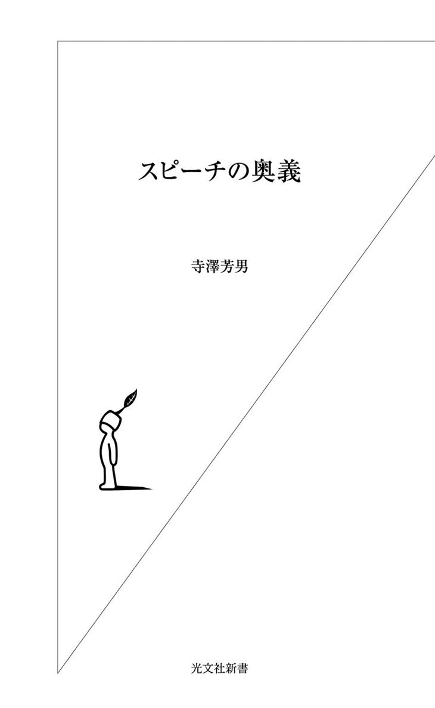

| スピーチの奥義 | |
| 寺澤 芳男 | |
| (2011) | |

目 次
ビジネスでも冠婚葬祭でも、スピーチで何より大事なのは緊張をうまくコントロールすることだろう。これは、内容以前の問題である。
スピーチがいかにすばらしい内容であっても、話すほうが過度に緊張していると聴衆は身を入れて話を聞くことができない。話が聴衆の耳に届かないのだ。
もっとも、人前で話すとなれば誰だって緊張する。それはいい。「いいスピーチをするぞ！」という多少の気負い――言い換えれば「適度の緊張感」がなければ、スピーチ全体がだらけてしまいかねない。
よくスポーツ選手が実力通りの、もしくは実力以上の力を発揮したとき、「良い緊張感をもって競技に臨み、存分に楽しめました」といったコメントをする。スピーチも同じ。「良い緊張感」があって初めて結果が出せるのである。
しかし、緊張し過ぎるとろくなことにはならない。壇上でコチコチになって言葉が出なくなったり、声が震えたり、滑舌悪くしどろもどろになったりしてしまう。自分でも何をしゃべっているのかわからなくなってしまう。言いたいことを言えないばかりか聴衆にも何も伝わらない。スピーチの目的を達成できないのだ。
これまでぼくは自分が演台に立つ場合も含めて数多くの〝スピーチの現場〟に居合わせてきた。それで実感しているのは失敗する原因の大半は「過度の緊張」にあるということだ。
日本人にはどうもこれからスピーチをする人を「がんばれよ」と言って激励する傾向がある。それがダメ。「がんばれよ」と言われると、いいスピーチをしようと、つい肩に力が入ってしまうからだ。
この「がんばれよ」は、英語に直すなら「リラックス！」。訳としては妥当な表現だが、対極にある概念であることは興味深い。アメリカ人は「リラックス！」と言われれば、自然と肩の力が抜けるというもの。
そこでまず緊張し過ぎないための気の持ちようについて考えてみたい。
おそらくスピーチをする人は自分が緊張していることしか頭にないだろう。
「上がり性だ」
「プレッシャーに弱い」
「しゃべりが下手だ」
そんなことを考えて緊張してしまう。
けれども、ぼくに言わせればそれは考え違いである。実はスピーチをする人よりも、スピーチを聞く人のほうが緊張しているのだ。
「どんな人がスピーチするのだろう」
「どんな話をするのだろう」
「自分にとって難しい内容じゃあないだろうか」
聴衆というのはそんな不安を抱えてドキドキしながら壇上を見つめているものだ。
あるいは、スピーチが始まった瞬間「この人、すごく上がっているみたいだけど、大丈夫だろうか」などと心配して、自分がスピーチをしているように緊張してしまう人もいるのだ。
いずれにせよ、聞く人はゆったりと構えているわけではなく、とても緊張しているのである。このことを認識するだけで、自分自身の緊張はかなり和らぐ。「自分が聴衆の緊張をほぐさなければ」という気持ちにもなる。
ようするに、「毒をもって毒を制す」のである。相手の緊張を利用して自分の緊張を制すればいい。相手を緊張させまい自分が緊張している場合ではないと思えば、結果としてうまく緊張をほぐすことができる。
スピーチというのはしょせんつまらないものだ。
こう言ってしまうと身も蓋もないが、実際講演会やパーティなどに出かけても、おもしろい話が聞けることはごく稀だ。
そういう「おもしろくなかった」という経験をたくさんしているだけに、人々のスピーチに対する期待度はさほど高くない。存外おもしろい話を聞けるとものすごくトクをした気分になる。
聴衆の立場に立って言えば、「おもしろい話が聞けたらいいなぁ」と多少の期待はするが「何が何でもおもしろい話を聞きたい」というわけではない。
だからといって「おもしろい話をしなくていい」というわけではない。「どのみち期待されていないのだから、さほど緊張することもない」と、鷹揚に構えていればいい。
そうして「聴衆の期待に応えなくては」というプレッシャーから解放されれば、ずいぶん気がラクになる。そのうえで、「さて、何とか話を聞いてもらうようにするにはどうすればいいか」を考えればいい。
「自分の話など、ウケなくてもともと」
と開き直ると自然と肩の力が抜ける。その分、意識を「いかにして伝えるか」ということに集中させることができるのである。
ぼくもスピーチの前には、決まって自分にこう言い聞かせている。
「リラックス、リラックス、リラックス......。今日の聴衆はそんなにぼくの話を聞きたいとは思っていない。仕事でくたくたになって、椅子にゆっくり座って考え事をするか、できれば居眠りをしたいと望んでいるだろう。自分なりに一生懸命話すことだけに集中しよう」
言葉は悪いがこんなふうにちょっと投げやりになるだけで、かなり緊張感から解き放たれる。
それに、ぼくの経験ではウケを狙った作為的なスピーチは十中八九、失敗する。狙い通りにウケなければ「こんなはずじゃあなかった」と焦りもする。
当然、スピーチがうまく運ぶわけはなく話す人と聞く人の距離がどんどん開いていくことになる。
大事なのは「ウケよう」などとあざといことを考えず、「これを伝えたいんだ」という情熱に任せてとにかく自信をもって突っ走ること。内容がさほどおもしろくなくても、聴衆は話し手のそういう必死な姿に心を打たれるのである。
緊張すると舌がもつれるので、スピーチを始める前に軽く〝舌慣らし〟をしておくことをお勧めする。
ぼくがいつも行っているのは、〝あいうえお発声練習〟だ。やり方はいたって簡単、お腹の底から大きな声を出して、
「あ～、い～、う～、え～、お～」
と十回繰り返すだけでいい。
補聴器を使っているので自分の声をちゃんとキャッチするかどうかを確かめるためでもあるのだが、滑舌にも効果絶大。壇上に立って挨拶の第一声がかすれることなくスーッと出てくる。しかも、口を大きく開けることで顔の筋肉が柔軟になる。緊張の余り顔がこわばるという事態を防ぐことができるのだ。
この発声練習は時間にして、ほんの一、二分である。スピーチののっけから声が出ないと、かなり慌ててしまう。そんなつまらないことでつまずかないためにも、ぜひお試しいただきたい。
では、どうすれば話し手と聞き手の間にある〝緊張の壁〟を崩すことができるのか。一番いいのは、まずは気のきいたジョークでみなさんに笑ってもらうことだ。
欧米人はそこら辺をよくわきまえている。これから自分が話すことを聞き手にすんなり受け止めてもらえるよう緊張をほぐすためのジョークをちゃんと準備してスピーチに臨む。
一方、日本人はまじめな人が多いせいかジョークからスピーチを始めることに抵抗がある。ここに、欧米と日本との根本的な違いがある。
笑いが〝緊張をほぐす言語〟であることは、洋の東西を問わずいずこも同じ。スピーチ上手を目指すなら、「第一声をジョークにする」ことを鉄則としたい。
ぼくがこの鉄則に目覚めたのは、フルブライト奨学生としてペンシルベニア大学大学院ウォートン校に留学した二十歳代半ばのころのことである。ある先生の講演を聞きに行ったとき、とても背の小さい人が出てきた。たまたま演台が高かったので彼がそこに立つとようやく頭が出る感じ。「気の毒になぁ」と思っていたら、彼は開口一番、こう言った。
「アイ アム スタンディング（I am standing.）」
一同、大爆笑！
コンプレックスを逆手にとって笑いに変えるあたり、「さすが！」である。何と言っても、〝自虐ネタ〟は人々の好むところでもある。
先生はその後会場の温かな空気のなかで気持ち良さそうに話をし、聴衆はそんな先生を一心に見つめて話に聞き入った。冒頭のジョークがいい流れをつくった好例と言えよう。
留学時代に数々の秀逸な冒頭ジョークに触れたおかげで、ぼくは若いころから「スピーチはジョークから入る」ことを意識してきた。
そのなかで「ウケた小咄」を一つ、紹介しておこう。
「留学当初、ぼくはすでに野村證券の社員だったので、よく大学のあるフィラデルフィアからニューヨークまでバスで行きました。当時、英語があまり得意でないのに前置詞にはやけに神経質なところがありまして、切符を買うときに『to New York.』と言いました。
すると、切符が二枚きたので『そうか、toじゃなくてforなんだな』と思い、『No, No, for New York.』と言い直した。そしたら今度は、四枚きた。困って『fourじゃなくてforなんだよ。どう言えば通じるんだろ。えーと......』なんてひとり言を言っていたら、なんと八枚きてしまいました」
この話をすると、だいたい笑っていただける。日本人はみんな海外で似たような経験をしているのだろう。
それに、この小咄を聞くと、聴衆のみなさんは「二十二年も米国にいた寺澤でも、そんな失敗をしたのか」と、ぼくに親近感を覚えてくれる。話し手と聞き手の距離がグッと近づく、そういう効果もあると思う。
この種の小咄は〝使い回し〟がきくので、聴衆が異なるいろんな場所で披露できる。〝冒頭ネタ〟としていくつか持っておいてソンはない。あれこれ試してみてウケのいい小咄を定番にするとラクである。
スピーチに自己紹介はつきものである。自分がどんな人間であるかをわかってもらったほうが話を進めやすいし、聴衆の「どんな人なのだろう」という疑問にきっちり答える必要もある。冒頭ジョークに次いで重要な要素だろう。
注意しなければならないのは、自慢話に聞こえないよう配慮することだ。いかに輝かしい経歴を持っていても、というより経歴が立派であればあるほど、それをストレートに語るとイヤミになる。
もちろん、なかには「すごい人だ」と感動してくれる人もいるだろうが、その場合はまた「雲の上の人の話など、自分には関係ない」と思われる可能性が高い。無意識のうちに、聴衆の耳が塞がれてしまいかねない。
自己紹介ではプロフィールそのものよりもその裏にある素顔を披露し、聴衆に「ふつうの人」と感じてもらうことが大事である。なぜなら、そのほうが聴衆と同じ土俵で交流することができるからだ。
自己紹介をするコツのようなものをいくつか、お話しすると......。
十年ほど前の講演会で、司会者が紹介してくれたぼくの経歴は、こんなふうである。
「本日は、現在ローン・スター・ジャパンというアメリカの投資ファンド会社の会長を務められている寺澤芳男さんをお招きしました。まず、ご来歴を簡単に説明させていただきます。
寺澤さんは一九三一年に栃木県佐野市に生まれ、早稲田大学政治経済学部を卒業して野村證券に入社されました。五六年にフルブライト留学生として渡米し、ペンシルベニア大学大学院・ウォートンスクールで学び、ＭＢＡを取得されました。その後、七二年に米国野村證券の社長に就任され、翌年にはニューヨークの名誉市民になられました。さらに八一年には、日本人として初めてニューヨーク証券取引所の正会員になられ、翌八二年に米国野村證券の会長に就任。長いニューヨーク勤務を終えて、野村證券本社の副社長に就任されたのは八五年のことです。
それから八八年に日本の民間人として初めてＭＩＧＡ（Multilateral Investment Guarantee Agency）、多数国間投資保証機関という世界組織の長になられ、その四年後に日本新党を結成された細川護煕さんの要請を受けて参議院議員に立候補。見事当選されました。羽田内閣では国務大臣・経済企画庁長官、外務委員長、環境特別委員等を歴任されました。
そうして参議院議員として六年の任期を終えて、現在は先ほど紹介したローン・スター・ジャパンの会長をされているわけです。日本でも非常に珍しい、政・財・官の要職を経験された唯一といってもいいくらいの方だと思っております」
まぁ、長いこと、長いこと！ いま書いていてもイヤになるくらいだ。人がぼくをどう紹介しようと勝手だが、こんな自己紹介はとてもじゃないけど口幅ったくて自分にはできない。聴衆から「肩書きのオンパレードだな。いけ好かないヤツだな」などと思われるのがオチだろう。
ぼくとしてはそんな時系列をなぞっただけのプロフィールに満足して、ふんぞり返って話を始めるわけにはいかない。それで、自らの肉声で素顔の見える自己紹介をしたのだった。
具体的には、「三人の恩人」を通して、自分の人生を駆け足で振り返るという話法を駆使した。〝あらすじ〟は以下の通りである。
「私には私の人生を大きく変えてくれた三人の恩人がいます。
一人は江頭啓輔くん。野村證券の同期です。彼は入社二カ月後から一年間フルブライトでプリンストン大学に留学しました。その間、私はといえば酒と麻雀に明け暮れる日々。そんなすさんだ暮らしをする私を見て、帰国した彼はとても心配してくれました。そして、『アメリカに行って勉強したらどうだ』と言い、フルブライトの試験に必要な準備を万端整えてくれたのです。
それからです、私が必死に英語の勉強を始めたのは。深酒をやめたとは言いませんが。いまでもよく『あのとき江頭くんのアドバイスがなかったら、私の人生はどうなっていただろう』と思います。
二人目の恩人は、行天豊雄くんという早稲田の同級生です。といっても彼が早稲田にいたのは一年だけ。どうしても大蔵省の役人になりたいと東大の経済学部を受け直し、夢を叶えた男です。
歳月が流れ財務官になった彼から当時野村證券の副社長だったぼくに電話が入りました。ワシントンに新たに創設されるＭＩＧＡという国際機関の初代長官になって欲しいというのです。大蔵省としては日本人を据えたい、でも官僚上がりの古手の人だと民間主導の世界がウンと言わないといった事情があって私に白羽の矢を立てたようです。でも私は即座に断りました。自分の英語では国際機関の長はつとまらないと思ったからです。
結局再三の要請があって受けたのですが、いまでは感謝しています。六十歳を前にして、国際的な舞台でこれまでにない刺激的な経験をたくさんさせていただきました。人生が大きく変わったのです。
そして三人目の恩人が後に総理大臣になった細川護煕さんです。自民党と社会党が二大政党として君臨する五十五年体制を何とか打破したいと立ち上がった彼に口説かれて、九二年の参議院議員選挙に出馬しました。
政治家になる意向はまったくなかったのですが、細川さんの熱意に負けました。おかげで短命ではあったものの、羽田内閣で経済企画庁長官を務めさせていただくこともできました。
冒頭でこういうお話をしたのは人生の転機というものはいつも刺激的であることを、みなさんに伝えたかったからです」
これはぼくの偽らざる本心だ。「自ら転機を求めたわけじゃない。三人の恩人がぼくに転機をもたらしてくれたんだ」と考えている。
だからこそ、「これをやりました、あれをやりました」などと自分がやってきたことを羅列するような自己紹介をすることは本意ではないのだ。
聴衆が話し手のプロフィールから学びたいのは実績の羅列ではなく、それがいかにしてつくられたかということだろう。苦労話や挫折経験、チャンスの捉え方などを通して聴衆が「なるほどそういう考え方、生き方もあるんだ」と自分の問題として捉えられるように話さなければ受け入れてもらえないのではないだろうか。
つい最近、出身校の栃木県立佐野高等学校でスピーチを行った。本校は県内の公立で二番目に中高一貫教育を導入しており、当日は中学二年生の生徒約百名と保護者、先生方が集まってくれた。
このお話を受けたときまず考えたのは、「中学生たちは十分で飽きるだろうな」ということだった。となれば、中学生たちを飽きさせないためにはどうすればいいか何か工夫をしなければならない。
そこで思いついたのが以前刊行されたマンガを利用することだ。すでに絶版になっているがぼくを主人公とした『ウォール・ストリート物語』（角川書店・一九九〇年）というマンガがあった。そのなかから十くらいの絵を選んで紙芝居仕立てにして話せば中学生たちが喜んでくれると思ったのである。
当日は横浜埠頭から氷川丸でアメリカへ旅立つ絵や、フィラデルフィアでの学生生活を描いた絵、ニューヨークの町並みを背景にした絵などをスライドで映し出した。
それらの絵は単純に楽しいし、主人公であるぼくが目の前にいる臨場感もあって中学生たちは大興奮！ 退屈することなく二十分ほどの話に聞き入ってくれたのだった。
その後の十分で伝えたのは二つのメッセージである。
「英語を勉強しなさい。二十年くらい経ったら国という区別がなくなる。さまざまなビジネスが世界を舞台とするなかで英語でコミュニケーションする必要性が増していく。そうなってから慌てて英語を勉強するよりも十四歳のいまから始めたほうがいい。覚えが速いんだよ」
「東京へ行ってサラリーマンになるのはやめなさい。東京をパスしてニューヨークとかロンドン、あるいは中国やアフリカなどとにかく外国に行きなさい。もう日本だけでビジネスが成立する時代ではなくなるから、いち早く海外に打って出るといい。もちろん就職を待たずに英語圏の大学に進学するのも一つの方法だね」
中学生たちは目を輝かせ、最後の質疑応答ではあちこちから手が挙がり非常に活発な会になった。
将来への夢に胸膨らませる少年・少女たちにとって「ウォール・ストリート物語」は刺激的だったのだろうと思う。
自己紹介に限らず、スピーチではビジュアルを使うのも効果的。可能ならば聴衆やテーマに応じて絵や写真、ビデオなどを利用してはいかがだろうか。
近年は就職活動の一環として面接対策を教える塾があるという。
ぼく達の世代には考えられないことだが、そういうところでテクニックを学ぶことを悪いとは言わない。ただ模範解答的な言葉をいくら流暢にしゃべっても、面接官の心を動かすことはできない。
ぼくも、ずいぶんたくさんの学生を面接したが、心証を良くしようという作為があるか否かはすぐにわかる。そんな体裁を取り繕ったようなしゃべり・態度ではなかなか採用したい気持ちにはなれないものだ。
それよりも熱意をもって「自分の言葉」でしゃべっているか、かっこうをつけずに素の自分で勝負しているか、といったことに注意を向けた。面接官によるだろうが話の内容よりも話す態度のほうが採用の決め手になることは多い。
参考までに、ぼくが五十年近く前に野村證券で役員面接を受けたときの自己ＰＲを紹介しておこう。
当時は英語のできる人が一目置かれるような雰囲気があった。大学三年生のときに日本通訳学校に通うなどして英語に多少の自信があったぼくは、履歴書に堂々と「特技は英語」と書き面接に臨んだ。こういうところで謙遜は無用である。
役員たちはその特技に注目したのだろう。面接ではこんな質問をされた。
「君は英語ができるそうだが、もし野村の店頭にアメリカ人がやって来て株を買いたいと言ったら応対できるか」
ぼくは即座に「それはできません」と答えた。でもその一言で口をつぐめばすべてが終わってしまう。続けて「なぜならば」と言い、理由をこう説明した。
「私は英語はできますが証券用語をまったく知りません。株の知識もありません。でもアメリカ映画は字幕を見なくてもほとんどわかりますから基礎的な英語力はあります。証券の知識と業務的、専門的な知識さえ身につければすぐに外国人の応対ができます」
ようするにいまの自分にはまだ仕事で英語を使うことはできないが、英語力はあることをアピールしたのである。
「字幕なしでアメリカ映画を見られる」というのはハッタリ半分だが、おそらく役員は、できないことをできないと正直に言ったぼくに好感をもってくれたのではないだろうか。さすが野村證券は懐が深い。
少なくとも、「できる」と答えて、「ならばやってみろ」なんてことになり恥をかくよりも上等な答え方だったと思う。
自己ＰＲが大切とはいえ、無理に背伸びをして自分を良く見せようとすれば自ら墓穴を掘ることになる。それが人生の常なのだ。
前にぼくのプロフィールを長々と述べてくれた司会者のお話をした。あれはあまりよろしくない例である。
たいていの場合、演者のプロフィールはプログラムなどを見ればわかるので、司会者はサラリと紹介するだけで十分だろう。
その意味で「うまいな」と思ったのはこんな紹介である。
「今日お話をいただく寺澤芳男先生は非常に変わった方です。アメリカから帰って日本に住んでいる日本人はたくさんいます。私もその一人でアメリカに十四年いました。寺澤さんは二十二年です。
ところが二十二年もアメリカにおられてご本人は『それでも英語のジョークがわからないよ』とおっしゃっているのです。これも冗談ではないかと思いますが、我々としては安心していいのか、心配していいのか......。その辺の答えは今日のお話をうかがってみなさんでそれぞれ答えを出していただきたいと思います。
先生がお書きになった『英語オンチが国を亡ぼす』は大変おもしろい本です。今日はこれも含め、『日本人は国際的な舞台で活躍できるか』という論題でお話をいただきます。それでは先生よろしくお願いします」
こういう紹介なら、それを受けて最初に「二十二年アメリカにいても英語のジョークがわからない寺澤です」などと言って笑いを取ることも可能である。聴衆だって退屈しないし、演者に対する興味もわく。
司会者の上手・下手は話し手がコントロールできることではないけれど自分のスピーチの滑り出しがうまくいくかどうかを左右する重要な要素である。
事前に「長いプロフィール紹介はいりません。サラリとやってくださいね」くらいのことは言っておいてもいいだろう。
「諸先輩をさしおいて私ごときがこんな高い席から......」
「本日はお忙しいところお運びいただき、まことにありがとうございます」
「ご丁寧な紹介をありがとうございました。専門家の方々がお集まりのなか専門家でもない私が僭越ながらお話しさせていただくことになり......」
日本人のスピーチはこういった型にはまった挨拶から入ることが多い。
それが礼儀だと思っているのだろうが、そんな紋切り型の挨拶は不要である。短いスピーチならなおさら欧米人のように挨拶抜きでいきなり本題に入ったほうがいい。
あるいは落語の「まくら」に当たるちょっとしたエピソードを披露する手もある。その「まくら」で聴衆を引きつけて本題にすんなり入っていく方法だ。実例をあげながらうまい「まくら」とはどういうものかを見ていこう。
「うちのカミさんは寺澤さんの大ファンです。エッセイをよく読んでいて二言目には『すごい人だわねぇ』などと誉めそやしてばかり。
それがちょっと癪にさわって言ってやったんです、『お前は寺澤さんがゴルフをやっているところを見たことがあるのか』と」
これは、ぼくがＭＩＧＡの長官に就任するときにホテルオークラで開いてもらったパーティの席でプロゴルファーの中嶋常幸さんが行ったスピーチの出だしである。
このエピソードを聞いた瞬間みんながワーッと笑い、場の空気が一気に和んだことを記憶している。いろんな人がスピーチをしてくれたなかで一番盛り上がった瞬間だっただろう。
スピーチのうまい人というのは、このときの中嶋さんのように日常風景を切り取ったような身近な話から始めることが多いような気がする。演者が自分と似たような日常生活を送っているという部分で聴衆は親しみを覚え、話に聞き耳を立てる。そんなメリットがあろうかと思う。
たとえば一九三三年から十三年にわたって慶應義塾大学の塾長を務められた経済学者の小泉信三さんはあるパーティで、
「今朝玄関先で靴紐を結んでいたら後ろからワイフに『何時ごろお帰りですか？』と尋ねられました」
なんて話から始めた。
これは誰にでも覚えのある日常風景。聴衆は無意識のうちに、「ここからどんな話が展開するのだろう」と興味津々で話に引き込まれていったのだ。
また二年ほど前の『文藝春秋』で読んだのだが向田邦子さんのスピーチのなかに「うまいなぁ」と感心したものがある。それは俳優の森繁久彌さんにまつわるエピソードから始まる。
「森繁さんがロンドンに行ってハイドパークのベンチで休んでいたときのことです。お隣には上品な老婦人が腰掛けていました。しばらくして森繁さんがふと目を上げると、有名な男優さんが通りかかりました。すると、そのご婦人はささやくような声で、でもピシャリとこう言ったそうです。
"Look down! Don't look up!"
ようするに『下を向いていなさい。頭を上げて男優さんを見てはいけませんよ』というわけです。
森繁さんは"Yes, of course."と小声で答えて、男優さんが通り過ぎるまでご婦人と同じように足元を見つめていたそうです」
おそらく聴衆は、エッセイのような向田さんの軽妙洒脱な語りにぐいぐい引き込まれていったのではないだろうか。町で有名人に遭遇したときの何とも落ち着かない気持ちを思い出しながら。
こういうスピーチを聞くと「ふつうの人がふつうの人にふつうのことをふつうに話しかける。そういう入り方がいいんだな」と考えさせられる。
スピーチをするとなるとつい気負って「笑わせてやろう」「驚かせてやろう」などと思いがち。でもそれをやってうまくいった例しはない。町でバッタリ会った人に「こないだこういうことがあってね」と話しかけるように始めたほうが、聴衆も身を乗り出してくるのである。
ぼくも彼らスピーチ上手を見習ってたとえばこんな出だしでスピーチを始めるようにしている。
「今日会場入りが少し遅れてしまったのは出掛けにニュージーランドの政府高官が突然訪ねて来られたからなんです。彼とどんな話をしたかというと、構造改革について。本日のテーマとも関連が深く......」
「今日コロンビア大学のキャンパスを歩いてきて、私は一九五八年にここで過ごした日々のことを思い出しました。紹介のなかでは触れられておりませんでしたが、私はコロンビア大学のビジネススクールで三カ月間、勉強したことがあるのです。そういうわけで私は自分自身をコロンビア大学のビジネススクールのみなさんのフレンドと考えておりますので......」
こういう調子だと話し手である自分もラクだし、聞き手もリラックスできるだろう。日ごろから「スピーチの出だしに使える」ことを意識して、〝日常風景ネタ〟を集めておくことをお勧めする。
スピーチの入り方としては聴衆が「えっ、何の話？」と思うような意外性のある言葉をぶつけるのも効果的である。ぼくが好んで使うのは、
「東京の港区に麻布山善福寺というお寺があります」
というフレーズだ。
ぼくの話はだいたい「日本人と国際性」といったことがテーマになるので聴衆はこの一言に「いったい何の話が始まるんだ？」と不思議に思う。不思議に思うから、一斉にぼくのほうを注視してくれる。
何も、奇をてらっているわけではない。ぼくの十八番としている話を展開するのに非常に好都合な入り方なのだ。やや間をあけてこう続ける。
「その善福寺というお寺に福沢諭吉のお墓があります。お墓には『独立自尊居士』という言葉が刻まれています。お弟子さんたちが福沢先生の一番愛した言葉だと思って戒名にしたのだと思います」
ぼくが伝えたいのは「独立自尊という言葉はこれからの新しい社会のキーワードになる」ということ。こういう出だしだと話の核心に入っていきやすい。
場合によっては別の入り方をする。
「大隈重信と福沢諭吉とどちらが偉いか。福沢諭吉のほうが偉いんです。なぜならば福沢諭吉は多くの言葉をつくったからです。
実はこれ、石原慎太郎さんが言ったことなんですね。『文藝春秋』という雑誌の『芥川賞を目指す諸君へ』というエッセイのなかで書いています。その福沢諭吉のお墓には『独立自尊』という......」
こんなふうに始めると、聴衆はまず「なぜ大隈重信？ 福沢諭吉？」と不思議に思うし、さらに現在の都知事である石原慎太郎さんの名前が出てくると「ほぉ、どんな話が始まるんだ？」と興味津々になる。
これら二つ、いずれかの入り方をしたほうが、「今日は福沢諭吉が大切にした独立自尊という言葉を考えてみたいと思います」などと始めるより、ましてや「今日ここでお話しできることを光栄に思います」などと挨拶するより注目度が数段高くなる。
そうやって、会場にいい空気をつくってから本題に入っていく。その際にまた話の展開にちょっとひとひねりを加えている。
「独立自尊という言葉は実は福沢諭吉が英語のセルフ・リライアンス（self-reliance）を訳してつくった新しい日本語ではないか」
というぼくの立てた仮説にもとづいて話を進めていくのだ。その根拠として次のようなエピソードを披露する。
「アメリカの思想家であり哲学者、作家、詩人でもあるラルフ・ウォルドー・エマソンが『Self-reliance』というエッセイを書いています。大変評判になったので同時代の福沢諭吉が読んでいる可能性は高いと思います」
「福沢諭吉は中津藩の下級武士。侍の習いとして四書五経を中心とする漢学を学んだことは間違いないでしょう。ただ、その種の書物のなかに独立自尊という言葉はないんです。これもまた私が参議院の図書委員会に属していたときに国会図書館の方々に調べていただいたので間違いないでしょう。となれば、福沢諭吉自身がつくった言葉だと考えられるわけです」
「ＮＨＫでニュースキャスターをやっておられた木村太郎さんによると、伝統ある慶應ボート部には昔二艇のボートがあって、一つがインディペンデンス号、もう一つがセルフ・リライアンス号という名前だったそうです。このことからも福沢諭吉と独立自尊という言葉の間に関係性が認められるのです」
「福沢諭吉と親交があったという英国人の曽祖父を持つ女性が、『曽祖父はしょっちゅう横浜からサンフランシスコに行っていて、そのたびにたくさんの本を福沢諭吉にプレゼントしていたと聞いたことがある』と言っています。そのお土産のなかに、エマソンの『Self-reliance』があったことは間違いないと太鼓判を押してくれました」
独立自尊という言葉のルーツを探るサスペンス仕立てのこれらの話は聴衆の知的探究心を刺激するのだろう。けっこう評判がいい。
また独立自尊という言葉の意味するところが腹にストンと落ちる感じで消化されるらしく、ぼくの言いたいことをすんなり受け入れてもらえるように思う。
「独立自尊なる言葉を誰がつくろうがそれは枝葉末節の話ではありますが、言葉そのものの持つ意味は重要です。というのもそれぞれ異なる価値観を持つ人々で成り立っている世界にあって、そういう違いがあることを互いに認め合いながら自己主張すべきところは自己主張するのが先進国型の社会であると考えるからです。そんな姿勢を持つことこそがまさに独立自尊の精神なのです」
そんなふうに話を締め括ると聴衆の多くが深くうなずいてくれるのだ。
ともあれ、スピーチをする以上は話を聞いてもらわなければ意味はない。「最初の一分で聴衆の耳目をひきつけられたら八割方は成功」と肝に銘じて工夫を凝らしていただきたい。
スピーチやコミュニケーションを学ぶ場ではよく「自分の言いたいことを整理してポイントをまとめておきましょう」といったことを教えられるのではないかと思う。
その背景には「言いたいことの半分も言えなかった」ことを悩む人たちが多いという事情がある。
もちろん「自分が言いたいことを言う」のは大切だ。ただその考えにあんまり囚われるのはちょっと危険である。
「言いたいことは言った！」
「言うべきことは言った！」
というレベルで満足してしまいがちだからだ。
ここでもし「それのどこが悪いんだ？」と思った人がいるとしたらスピーチの目的を履き違えている可能性がある。
そういう人は「自分の話に相手は必ず耳を傾ける」「自分の言い分を相手は必ず理解する」という前提に立って「言いたいことが言えればいい」と思っているのかもしれない。しかし現実にそんなことはめったにない。
どんなことを話すかを考えるときは、まずその〝希望的観測〟に基づく「みんなが自分の話を聞いてくれる」という前提を崩すことから始めるべきだろう。
スピーチだけではなく会議で発言したり、ネゴシエーション――交渉をしたりなど人に話す場合はすべからく、自分の「口」からどんな言葉を出すかではなく、相手の「頭のなか」に何を残すかということを優先して考えることが大事である。
ここをおろそかにすると、聞き手にとって「聞きたくないこと」「聞く耳を持たないこと」ばかり話して総スカンを食う恐れがある。
ようするに自分の「口」よりも、相手の「耳」を意識する。それがスピーチをはじめとするコミュニケーションの鉄則と言えよう。
「相手は自分の言い分に対してどんな考えを持っているのか」
「相手は自分の話にどのくらいの関心があるのか」
「相手は自分の話そうとしているテーマについて、どの程度の知識があるのか」
そういったことを考えると話し方が自ずと変わってくるはずだ。
たとえば、反発が予測される場合は、その言い分に理解を示しながら自分の言い分も理解してもらう方向で話を進める。互いが歩み寄れる余地を残して話すことがポイントになるだろう。
また相手の関心があまり高くなさそうならば、まずは興味を示してもらえそうな話題で惹きつけてうまく本題にもっていく工夫が必要。知識が不足しているようなら、丁寧でわかりやすい説明を心がけなければならない。
このように相手の「耳」を意識して話をすると、少なくとも自分の話がシャットアウトされることはなくなるので「伝える」という目的は最低限達成される。うまくいけば、自分の話を相手に理解・共感してもらうところまでもっていけるはずだ。
自分の話に対して聞き手が何を望んでいるかを知るのはそう難しいことではない。たいていの場合、スピーチを依頼される時点でテーマの大枠は決められているし、自分がなぜ演者に選ばれたのかも知らされるもの。リサーチして聞き手のニーズを整理したうえで話を組み立てればよい。
ぼくの場合は「アメリカで二十二年を過ごしたこと」「政・財・官を渡り歩いてきたこと」「金融を中心とする国際情勢に精通していること」などがいわゆるウリである。そう考えると、聞き手がどんな話を望んでいるかがわかる。
・英語力をどうやって身につけたのか
・アメリカ人と日本人ではどこが違うか（国民性、ライフスタイル、ビジネスのやり方など）
・グローバルビジネスにおけるネゴシエーションはどうすればうまくいくか
・国際人とは
・世界は日本をどう見ているか
・国際社会のなかで日本が果たすべき役割
・日本が国際競争のなかで勝ち抜いていくためにはどうすればよいか
・政治家と官僚の関係は本当のところどうなのか
・どうやってキャリアアップし、政・財・官を渡り歩いてきたか
ざっとこんなところだ。あとはどういう聴衆が集まってくれるかを考慮し、話す内容を決めることにしている。
この程度の準備なら雑作なくできるはず。というよりやっていて当然の準備なのだが、意外と何も考えていない人が多い。自分が言いたいことを考えることに気を取られ、つい聴衆の「耳」を忘れてしまうのだろう。
そうならないためにスピーチに際しては何よりも聴衆の特性をリサーチすることが重要であると再認識していただきたい。
通常の講演会には「この人の話を聞きたい」という人が集まってくる。またパーティ等のスピーチでは、聴衆のニーズをよく知る主催者が「この人に話して欲しい」と演者を決める。だから聴衆の大半は自分に対して好意的な人たちだ。話し手としてはさほど困ることはない。
しかし選挙演説やビジネススピーチの場合、ときとして聴衆の「あなた誰？」的な懐疑心を一身に受けながら話さなくてはならないこともある。これは難しい。自分自身がどういう人物であるかを語りながら聴衆の懐疑心を解いていく文脈が求められる。でないと聴衆は耳を傾けてくれないのだ。
その意味で「お見事！」と感心したのは、二年前にアメリカの第四十四代大統領に就任したバラク・オバマが選挙戦で展開した数々の演説である。
大統領選に出馬した当時、オバマはシカゴの有名人ではあったが決して全国的な知名度があったわけではない。演説を聞く人たちの多くが「誰？」という感じだっただろう。
しかもオバマはケニア人のお父さんと白人のお母さんの間に生まれたアフリカ系のアメリカ人。両親は幼いころに離婚しており、母方の祖父母に育てられた。いわゆる名門の出ではなく、これまでの大統領候補と比べると明らかに「異人種」だった。加えてミドルネームがフセイン。どうしてもイラクの独裁者サダム・フセインを、さらにはテロリストを連想させる。マイナスイメージだらけだったのである。
そこで、オバマはどうしたか。ふつうなら必死になって自己弁護に走り、自分がいかにリーダーとして優れているか、声高にアピールするところだろう。けれどもオバマは「みなさんが懐疑的になるのもごもっとも」と受け入れたのである。
「シカゴの貧しいサウスサイドから来たやせっぽっちの、妙な名前のヤツが選挙に勝てるわけがない。でも、変な名前と特異な経歴を持っていても私の価値観はアメリカ人の価値観と同じなのです」
これは二〇〇四年にニューヨークタイムス紙に掲載されたコメントである。
また選挙演説でも、「私のような者が出馬表明するなんて大胆なことだとわかっている」「アフリカ系アメリカ人が大統領になるのは時期尚早だと思っている人が多いだろう」といったことを繰り返し述べている。
こんなふうにしてオバマは自分に対する人々の懐疑心をあえて表舞台に出したのである。経歴を詐称してでも弱点を隠そうとする人が多いのにかなり勇気ある行動だったと思う。
でも人間というのは不思議なもので、自ら弱点を堂々とさらけ出す人のことは逆に信用するものなのだ。
オバマの初期のころの演説を見ると、自分がアメリカで育ったふつうのアメリカ人であることを聴衆に感じてもらおうと腐心していることがよくわかる。この段階を経て、オバマは演説を自分がどういうリーダーになろうとしているか、どんな国づくりをしていくかという文脈につなげていったわけだ。
この例から学ぶべきは、聴衆が話し手である自分に懐疑的もしくは否定的な目を向けているような集まりでは、まずそういう聴衆の気持ちをしっかり受け止めること。その気持ちを代弁しながら「そう思われるのもごもっともです」と自分の弱点をさらけ出すことが大事だ。
ビジネススピーチにおいてはときに「あなたごときに何がわかる」「いったい何様だ」「大した話もできないくせに」といった視線にさらされることもあろう。そんなときにはぜひオバマの論法を思い出して欲しい。
間違っても突っ張って、背伸びして、躍起になって、「自分はあなたがたが思っているような人間じゃない」と否定し、いかに自分が優れているかを誇示するような物言いをしてはいけない。それでは反発を買うだけだ。そうではなくてたとえば、
「みなさんはおそらく私を何者だと訝しく思っておられるでしょう。その通り、自分でもこの場にいるのが不思議なくらいです。とりたててすばらしい経歴があるわけではなく、知名度もまったくないし、肩書き、実績、能力などどれをとっても十人並みです」
などと言ったほうがいい。それが聞き手の知りたいことでもあるのだ。
たぶん聴衆は「何だ、わかってるのか」と拍子抜けして「話を聞いてやるのもやぶさかではない」という気持ちになる。会場の空気が和んだところで、「ただ、今日はどうしても聞いて欲しいことがあってやってまいりました」とか何とか続けると、スピーチにいい流れをつくることができるはずだ。
誰が言ったか「スカートとスピーチは短いほうが良い」――。
スカートはともかく、「スピーチは短いほど良い」というのはぼくも常々感じていることである。
究極の例として、ヨーロッパのある有名な哲学者がニューヨークにやってきたときのスピーチがぼくにとっては非常に印象深い。
会場には「どんなすごい話をしてくれるんだろう」と期待して大勢の聴衆が集まっていた。演壇に上がった彼はシーンと静まり返った会場をしばし見渡して、にっこり笑ってこう言った。
"Thank you."
そしてあろうことか、そのまま演壇を降りてしまったのだ。
あわてたのは主催者である。「ぜひ続けて欲しい」と、彼を促したようだ。すると彼はもう一度演壇に立った。しばらく無言でいて今度は、
"very much."
と言ってまたにっこり笑って降りてしまったのである。
スピーチとしてはおそらく〝世界最短記録〟を打ち立てたのではないかと思うが、これが非常にウケた。おまけに会場で販売された書籍が飛ぶように売れたそうだ。
彼が計算してやったかどうかはわからない。英語が苦手なだけだったかもしれない。でも「スピーチは短いほど良い」ことの証明でもあるように思う。なかなかマネのできない芸当だ。
なぜスピーチは短いほうがいいかと言うと、人間の集中力はもってせいぜい十五～二十分だからだ。それより長いと聞き手の意識が散漫になり、いい話をしても頭のなかに届かない場合がほとんどである。
だから結婚披露宴や各種パーティでスピーチしたり、会議などで発言したりするときは十分程度を目安にするといい。その辺のことはおそらく主催者側も心得ているのだろう。スピーチを依頼されるとき、「十五分くらいでお願いします」と言われることが多いように思う。
ところが困ったことに「十五分で」と頼まれると、たいていの人はその十五分を目いっぱい使おうと思う。それで失敗する。あれもこれもと内容を欲張り、時間オーバーしてしまう。
そうなると聴衆は長話に飽きてソワソワするわ、主催者はあたふたするわ、後に続く話し手は苛立つわで、会そのものが台無しになる。
腹八分目が体にいいように、スピーチも八割でやめるのがいい。聴衆が「もう少し聞きたい」と思うところで終えるほうがうまくいくのである。十五分と言われたら十二分、五分と言われたら四分、三分と言われたら二分といった具合に、話を短く収める努力をしたい。
また、四十分とか一時間、二時間、長く話さなければならない場合は聴衆の集中力が切れる十五分を目処に話の切れ目をつくり、注意を喚起する工夫が必要だ。
ぼくがよく使う手は長めの間をとることである。急に黙ったり、何も言わずにステージを行ったり来たりしていると、聴衆は「あれ、どうしたんだろう？」と心配してくれる。
そのころ合いを見計らって、「ちょっと疲れました」とか「次に何を話すか忘れました」などと言って笑ってもらったり、何食わぬ顔で話を再開したり。いずれにせよ間を長くとることで、ともすればステージから遠ざかっていきそうな聴衆の関心を呼び戻すのである。
このほか、随所にジョークのオチをつける、話すときのトーンやリズムを変える、水を一口飲んで気合を入れ直す、といった方法もある。長いスピーチの場合はとくに人間の集中力の限界を考慮して、聴衆を飽きさせない工夫をすることが大切だ。
スピーチで短くすることと同じくらい重要なのはテーマを二つ以内に絞ることである。できれば一つ、多くても三つに留めたい。
なぜなら三つ以上のテーマで話をされても、聞き手の頭のなかに入らないからである。集中力と同じで人間の記憶力にも限界がある。
これは聞き手の立場で考えるとよくわかる。もし話し手が「今日はおもに五つのことをお話ししたい」などと言ったらどう感じるか。話を聞く前にもうげんなりしてしまうのではないだろうか。それよりも、
「今日みなさんにお伝えしたいことは一つだけ。......についてです」
「今日は二つのテーマでお話させていただきます。一つは......」
というふうに話してもらったほうが、「よし、一生懸命聞こう」という気になる。
心理的にはお土産をもらったときと似ている。たくさんのお土産をもらうと嬉しい反面ありがたみが薄れる。数が多ければ多いほど一つひとつのお土産の重みも軽くなる。場合によっては持って帰るのが大儀になって、お土産の数を減らそうとすることもある。
しかし一つだけだと、ものすごく貴重なお土産をいただいた感じがする。ありがたいし、荷物がかさばることもない。大事に家に持って帰って、またじっくり味わいたいと思うだろう。
そもそもスピーチはたった一つでも聞き手の頭に残ることがあれば大成功だと思っている。短い時間にいくつものことを詰め込まれても会場を出た瞬間にすべてが飛んでしまうだけなのだ。
「スピーチの出来・不出来は長さとテーマの数に反比例する」
それがぼくの持論である。
時間は短ければ短いほど、テーマは少なければ少ないほど、スピーチの出来映えは上がるのである。
あまり上等とは言えないが、人間には誰しも他人の不幸・不運を心密かに喜ぶ傾向があるものだ。よく言われるように、「人の不幸は蜜の味」なのである。
逆に他人の幸福・幸運は本音を言えば心から喜べない。それを自慢げに語られるとなおさら「イヤなヤツだ」となる。「幸福の絶頂から滑り落ちろ」なんて呪いにも似た気持ちを持つことすら、あるだろう。
その一方で「成功の秘訣を教えてもらいたい」気持ちが強い聴衆にどう応えていったらいいだろうか。
「他人の不幸・不運話が好き」「サクセス・ストーリーが好き」という相反する聴衆心理を両方満たすためには方法は一つしかない。
「挫折や失敗の体験を軸にサクセス・ストーリーを組み立てる」
ことである。「自分の力で成功をもぎ取った」と言うといやらしいが、「逆境やどん底を味わって、そこに救世主が現れたおかげで今日の成功がある」というストーリーは受け入れられやすいのである。
実際、成功者にはそんな〝逆境ストーリー〟があるものだ。そのなかで「自分はがんばったんだ」という部分をちょっと軽めにするだけで、聴衆好みのサクセス・ストーリーを組み立てることは可能だろう。
自らのサクセス・ストーリーが求められるスピーチでは「逆境があってこそサクセス・ストーリーは光る」ということを鉄則としたい。
その意味でもぼくが名スピーチだと思うのは、アップル・コンピュータの創始者であるスティーヴ・ジョブスが二〇〇五年にスタンフォード大学卒業式で行ったスピーチである。
タイトルは"Stay Hungry, Stay Foolish."（喰らいついて離さないハングリー精神を持ち、バカなことも時々やろう）。ちょっと長くなるが、寺澤芳男訳で全文を紹介しよう。
今日は素晴らしいスタンフォード大学の卒業式に皆さんと一緒に出席できてとても光栄です。
私は大学を卒業していません。今日の大学の卒業式は本当のことを言えば、初めての経験です。三つばかりお話しします。みんな簡単なことです。聞いてください。
点と点をつなぐということが最初のお話です。
私はリード大学に入学してなんと六カ月で中退。本当に辞めるまで一年半ほど大学に居残って授業を聴講していました。なぜそんなに早く退学したのでしょうか。それは私の生まれる前の話ですが、私の母は未婚の大学院生で、私を生む前から育てる気はまったくなく、いずれ養子に出す気でいました。事実、生まれると同時に弁護士夫妻への養子縁組が決まっていたのです。
ただこの弁護士夫妻は男の子である私を見て断ってきました。女の子が欲しかったのです。順番待ちの二番目にいた夫妻へ私は養子となることが決まりました。私の生みの母はこの二番目の夫妻の夫が中学校卒、妻が高校卒なので三～四カ月躊躇しましたが、私を大学まで行かせることという約束を取った上で、育ての親になってもらうことが決まりました。
十七年後、私は大学へ入りました。ただこの大学はスタンフォードと同じくらい授業料が高く、収入のそれほどない育ての親の貯金を全部つぎ込むことになりました。私は最初の六カ月で大学の授業に何の価値も感じなくなりました。自分が何になりたかったのかわかりませんでした。そのまま大学にいたとしてもそれが見つかるとは思えませんでした。そんな自分なのに、一生かけて貯めたお金で養ってくれている養父母に申し訳なくなりました。
そして大学など出なくても何とかなるだろうと考え、中退することを決心したのです。たしかに怖かったのですが、いま考えると人生で最良の決断だったと思います。この決断のおかげで自分の興味のわく授業だけに出席できたのですから。
生活は大変でした。寮の部屋もなかったので友だちの部屋の床で寝起きしました。コーラの空きビン回収で五セントを集めて食事代にしました。日曜日の夜は十一キロも歩いて町のはずれの教会で無料の食事にありついていました。生活はひもじかったけれど充実していました。自分の好奇心と感性だけをたよりにしていた生活でした。お金では買えない経験もしました。その一つをお話ししましょう。
リード大学は当時、カリグラフィー（手書きのアルファベット。日本の書道のようなもの）ではアメリカ一とされ、キャンパスの中のポスターやラベル、引き出しの見出しまで美しい手書きの文字であふれていました。自由に科目を選ぼうと思っていた私はこの文字に魅了され、カリグラフィーのコースをとりました。いろいろな字体や文字ごとに微妙に違う文字と文字との間など、カリグラフィーの奥義を学びました。それはサイエンスでは表せない、歴史ある微妙で美しいアートで、私はこの世界にすっかり魅了されてしまったのです。
こんなものを学んでも、現実的に役に立つことなど、当時はありませんでした。ところが十年後に最初のマッキントッシュのコンピュータを設計していたとき、このカリグラフィーが突如として頭によみがえってきたのです。そしてマッキントッシュは世界で最初の、美しいフォントをもつコンピュータとなりました。
もし大学であのコースに出合わなかったら、マッキントッシュにはいまのような美しいフォントがそろっていなかった。もっと味気ないものになっていたでしょう。
大学生当時の私がこのようなことを予見していたのではありません。しかし大きな変化の伏線になっていたのです。
点と点を最初から結ぶのはむずかしいことです。後に振り返ったときに初めて、点と点を結んでいた線が見えるのです。だから、いま一見無関係に見える点もいずれは自分の人生の中で大きな線でつながれることを信じなくてはいけません。自分の勘、運命、輪廻を信じ続ける、そういう考えをもっていると人生に失望することはなく、常に自分に力を与えてくれるようになります。
二番目のお話はラブ（愛）とロス（失うこと）です。私が人生で比較的早く、自分の情熱をもてるものを見つけたのは幸運でした。
両親のガレージで友だちのウォズとアップルを始めたのは二十歳のころで、私たちは脇目もふらずに働きました。十年後に気づいてみると、社員四千人、売り上げ二十億ドルの会社に成長していました。その一年前に最初の製品、マッキントッシュを発売したばかりで、私は三十歳でした。
しかし私は突然解任されました。会社を追われたのです。自分で創業した会社をクビになるなんてありえないと思っていました。会社が大きくなるにつれ、会社を経営するために優秀な経営者を外部より招聘しました。最初の一年はその人とうまくやっていましたが、だんだん意見が合わなくなり、ついに対決するはめになったのです。会社の取締役たちは彼に味方をし、私は三十歳で自分の創業した会社から追い出されたのです。
マスコミの餌食にもなりました。それまでの人生をかけたものを失い、絶望のどん底に突き落とされました。自分が何をしてよいのかわからず、途方にくれた数カ月でした。前世代の起業家の期待を裏切ったのではないかと悩み、ヒューレットパッカードのパッカードさんにも謝りに行きました。マスコミにもさんざんたたかれ、シリコンバレーから逃げ出すことも考えました。
そんな騒動の中で簡単な事実に気がつきました。それは自分の仕事の中身に対する情熱はいささかも衰えていなかったという事実です。アップル社で拒絶されたにもかかわらず、私は自分のやっていたことが大好きでした。その情熱を大切にして私はもう一度やり直す決意をしました。
いまになってみれば、アップル社を解任されたことは私の人生において大変よかったと思います。成長し続けなければならないプレッシャーからも解放され、謙虚な初心者の気軽さを楽しむようになりました。この時期は人生の中でも一番クリエイティブな仕事ができました。
その後の五年間で、ネクストとピクサーという会社を立ち上げました。その間すばらしい女性にも出会いました。彼女は私の生涯の伴侶となりました。ピクサー社は世界初のコンピュータアニメーションであるトイストーリーをつくり、今では世界で最も成功しているアニメ制作会社となっています。
運命のいたずらと言いますか、このネクスト社はアップル社に買収されました。それによって私は期せずしてアップル社に復帰することになったのです。ネクスト社で培った技術はいまアップル社の新技術の核心となっています。
一方で私は妻のロレーヌとともに幸せな家庭を築き始めました。
このような出来事はアップル社をクビにならなければ起こらなかったことです。たいへん苦い薬でしたが、私という患者には必要だったのです。人生においては時々レンガで頭を殴られるようなこともあります。そんなときは自分と運命を信じることです。
苦難のなかで私が前向きでいられたのは、自分のやっていることが好きでたまらなかったからです。自分が情熱のもてることを見つけなければなりません。これは仕事でも恋人でも同じです。仕事は人生のなかで大きな部分を占めます。情熱をもてる仕事につければすばらしい結果を生みます。あなたがまだそのような仕事を見つけられないのなら、探し続けてください。妥協してはいけません。情熱のもてるものに出合ったときは、頭ではなく心が自動的に反応します。そして愛情深い人間関係と同じように、年月がたつにつれどんどん良くなっていきます。情熱を捧げることのできるものを探し続けましょう。中途半端な妥協はやめましょう。
三つ目のお話は、死についてです。
十七歳のときに読んだ本に書いてありました。
「毎日を人生最後の日と思って努力すれば、いずれ望みはかなえられる」
この考えは私に大きな影響を与えました。過去三十三年間、毎日朝起きて自分の顔を鏡で見ながら、「もし今日が自分の人生最後の日だったら、今日の予定をそのままこなすか？」を問い続けました。そして何日もその答えがノーであれば、何かを変えなくてはいけないと思いました。
いずれは自分も死を迎えるという考えは人生で大きな決断をする際に大変役に立ちます。見栄、他人の目、失敗の恥ずかしさ、そして恐れ。それらの感情は死を前にすると色あせてしまう。何が一番大切かを教えてくれます。死を意識することで「自分には失うものがある」というのは幻想であると気づくのです。我々はみな裸で生まれ、裸で死んでいきます。自分の心の叫びを指針にすべきです。
一年ほど前に私はガンを宣告されました。朝の七時半に病院でスキャンを受けたとき、すい臓に腫瘍が見つかったのです。それまですい臓とは何かさえ知りませんでした。医師によるとこのガンは確実には治療ができないガンで、余命は三カ月から六カ月と宣告され、心の準備をするように言われました。
子どもたちに何と言えばいいのでしょう？ 目の前が真っ暗になりました。とても言葉で言い表すことはできません。
この宣告を受けた後は、一日中途方に暮れていました。その夜、私は病院に戻り、喉、胃、腸に針を通してすい臓の生体検査を受けました。その結果、奇跡的にも私のガンは手術によって治せる稀な腫瘍ということがわかったのです。すぐに手術を受け、私は一命を取り留めました。
これは、私が死に一番近づいた経験です。少なくともあと数十年はこんな経験がないよう祈っています。頭のなかだけではなく、実際に臨死の体験をしてみて確実に言えるのは、人は誰も死にたくないということです。天国には行きたいけれど死にたくはない。でも人間はいつかは死にます。死は壮大な自然の摂理の結果です。死ぬことにより、より新しい種が生まれてくるのです。死は有無を言わさず、変革の動機となります。あなたもいずれは老いぼれ、後進に道を譲らねばならないのです。
時間は限られています。他人の人生を歩むのはやめましょう。他人のつくった固定観念の罠にとらわれないようにしましょう。他人の意見に左右されず、自分の心の叫びに耳を澄ませましょう。そして自分の心と直感を道標としましょう。どういうわけか、心と直感は自分が何になりたいかを常に知っているのです。
私が子どものころ、『The Whole Earth Catalogue』という素晴らしい本がありました。私の世代ではバイブルのような位置づけで、いまのグーグルのような情報の宝庫で新鮮なアイディアが山のように詰まっていました。
出版者のスチュアートがこの本の最後の版を出したのは一九七〇年代半ばのころ。私はちょうど皆さんの年ごろでした。最終号の裏表紙に早朝の田舎道の写真がありました。これから皆さんがヒッチハイクの旅に出るような光景です。その写真の下に"Stay Hungry, Stay Foolish."という言葉が書いてあります。出版者から読者へのお別れの言葉でした。
これは、私が当時からずっと大切にしてきた言葉です。これから社会へ巣立っていく皆さんのはなむけの言葉にしたいと思います。
「ハングリー精神と遊び心を持ち続けよう」――。
ありがとうございました。
いささか無粋ながら、ジョブスのこのスピーチが名スピーチたる所以についていくつかポイントを付しておこう。
・自分にとって初めての卒業式であることから話を始めている。それだけで、卒業生たちの耳目を引く。
・三つの話があると明示することで聴衆は話を聞く態勢ができる。
・決して恵まれた出自ではないことや、学生時代に苦労した体験談を披露。聴衆が好む〝不幸話〟を展開している。
・成功をもたらしたのが何となく心惹かれたカリグラフィーであったこと。そういう偶然の出合いが後の成功に結びつくことを教えられる。
・実家のガレージから始めたビジネスが大成功したものの、十年後に自分が創業した会社をクビになったという絶望的なストーリーを披露。これも人が好むものだが、同時に聴衆は「それでも仕事に対する情熱を持ち続ける」ことの大切さを学ぶ。
・新たに始めた仕事で再び成功し、幸せな家庭を築いたものの、今度はガンを宣告されるという不幸に見舞われる。このときの心情を「天国に行きたいけれど死にたくない」と素直に語り、臨死体験を味わったからこそ説得力のある人生観を展開。聴衆は素直に、ジョブスのメッセージに耳を傾ける。
・最後に子どものころに読んだ本の話をし、聴衆に「えっ、それが何？」と思わせたところで一番伝えたいメッセージを伝えている。腹にストンと落ちる。
こうしてジョブスは文字通り「山あり谷あり」の人生を劇的に語り、そこから引き出される人生訓とともに聴衆の心をわしづかみにしたのである。
ジョブスほどドラマチックなサクセス・ストーリーはないにしても、このスピーチの展開は参考になるのではないだろうか。
誰しも不幸・不運から学ぶことは多い。成功哲学について話すのなら、聴衆も少なからず経験しているであろうマイナスの境遇を軸にしたほうが共感をもって受け入れられるし、そこから得られる教訓を自分のものとして頭に残してもらえるのである。
サクセス・ストーリーをより輝かせるのはジェットコースターのようなシナリオと、不特定多数の人の生き方の助けとなる教訓である。
ビジネスにおけるコミュニケーションはすべからく「結論ファースト」が鉄則だ。
たとえば上司から「あの件どうなった？」などと聞かれた場合、まず結論を言わなければならない。これが簡単そうでなかなかできない。いい報告ならともかく、好ましい状況でない場合はつい言い訳じみた説明から入ってしまいがちだ。
悪い報告は後回しにしたい気持ちはわからないでもないが、そんな説明を聞かされる上司はイライラする。途中で「ようするにまったく手をつけてないということか！」など、怒りの爆弾を落とされることもある。
聞き手である上司の立場に立って考えれば、「まず結論をたしかめたうえでじっくり話を聞きたい」ことはすぐにわかる。でないと落ち着かないのである。
どのみち報告は避けて通れないのだから、どんな状況であれ結論ファーストがポイントとなる。少なくとも、回りくどくしゃべる人よりは「仕事ができる」と評価されるはずだ。
スピーチだって同じである。最初に一、二分の「まくら」があって、すぐに「今日はこういうお話をします」と最も肝になるメッセージを言っておかないと、聞くほうは身が入らない。結論を先延ばしにすればするほど聴衆の気持ちは自分から離れていく。
幸いぼくは「結論ファースト」のコミュニケーションを野村證券で鍛えてもらった。株というのは売りか買いかホールド（持つ）か、結論は三つしかない。お客さんから電話がかかってきたときに市場の状況説明からくだくだ述べていたら、たちまち雷を落とされるのだ。
たとえばお客さんがやっと貯めた一株一万円の株を五千株持っていたとしよう。景気が悪くなってきてどうしようというときに、証券マンが開口一番言う言葉は三つくらいしかない。
「全部売りましょう」
「全部ホールドで、もう少し状況を見ましょう」
「半分は売って半分はホールドにしましょう」
そうして先に結論を出しておいて、「なぜならば」と根拠を説明する。そのほうがお客さんは落ち着いて証券マンの話を聞ける。根拠から入ると「だからどうすればいいんだ」となるし、ましてや証券マンが「うーん......」と考え込むわけにはいかない。お客さんに不信感を与えてしまうだけだからだ。
株は丁々発止の世界なので、常に「瞬時に結論を出せる」よう日頃から売買のシミュレーションをすることも求められたし、迅速に結論を出す能力も鍛えられた。
話は横道にそれるが、パソコンのない時代は電話がコミュニケーションツールだった。ぼくら若手は、「いかに早く電話をとるか」という訓練もさせられた。お客さんは急いでいるから一秒でも長く待たせてはいけない、というわけだ。
古い電話機だったせいか、呼び出し音がリーンと鳴る前に少し揺れる。その瞬間に受話器をとる。そのくらいの速さが求められた。先輩のなかには、「電話の揺れ方で、売り注文か買い注文かわかる」という猛者もいた。わかるはずはないと思うが、彼は「常に緊張して、自分の感覚を研ぎ澄まして電話の音を聞け」と教えたかったのだ。
コミュニケーションでは常に「結論ファースト」を意識し、習慣づけるといい。自然と誰と何を話すときも「結論ファースト」が身につき、スピーチや交渉にもいい影響をおよぼしてくれるに違いない。
ぼくが「結論ファースト」を信条としていることにはもう一つ理由がある。野村證券に入社し、外国部に配属されたことだ。
この外国部というのは、一九五〇年に「外資に関する法律」が新たに施行されたことをきっかけに創設された部署である。この法律は外国人投資家がドルを円に換金して日本株を買った場合、六カ月以上保有してから売れば売却代金（益があればそれを含めて）を円からドルに交換できるというものである。これにより、日本に駐在しているアメリカ人を中心とする外国人が日本の株を買いやすくなった。当然野村だけではなく山一、日興、大和など当時の大手証券会社はこぞって外国部を創部した。
外国部で仕事をする以上、店頭に投資相談にやって来るアメリカ人に対応しなければならない。奇しくも就職試験の面接で質問された「もし野村の店頭にアメリカ人がやって来て、株を買いたいと言ったら応対できるか」という仮定のシーンが現実になったのである。
ところが新入社員のぼくにはまだそれだけの英語力はない。そこでどうしたか。いまにして思えば何とも図々しい話だが、お客さんにこうお願いした。
「私はいま一生懸命、英語の勉強をしています。もしお時間があれば、近くの喫茶店でコーヒーでも飲みながら、英語を教えていただけませんか？」
信じられないかもしれないが、お客さんはたいてい喜んでつき合ってくれた。
アメリカ人というのは相手が自分の心情をストレートにさらけ出すと、頼られたことを意気に感じて「よし力になってやろう」と思ってくれるのだ。いやアメリカ人に限らず、どの国の人だって頼られて悪い気がする人はいないだろう。
おかげでぼくは英語を教わるというカタチで多くのアメリカ人顧客とより親密な関係を築き、上々の営業成績を上げることができたのだった。
もっとも当時、アメリカの大手投資信託運用会社が日本企業の株に食指を動かしていたかというと、そうでもない。どちらかといえばそっぽを向いていた。企業の実態がよくわからなかったからだ。
そういう投資信託運用会社に対する営業を強化するには、何より日本企業に関する正確な資料が必要だと考えた。まだセキュリティアナリスト（証券分析家）なる職業が確立されていない時代のこと、資料は自分で作成するしかない。それで、日本語で書かれた日本企業の会社案内を英訳することにした。
このとき協力してくれたのが英語の先生でもあったアメリカ人のお客様だ。彼は毎日、仕事が終わってから夜中まで、新橋のホテルに缶詰めになって翻訳に悪戦苦闘するぼくのそばでいろんな助言をしてくれた。
資料ができたらシメたもの。運用会社相手にふだんの営業通りに「結論ファースト」で「これは売りです」「これは買いです」と言って、「なぜなら......」と説明していけばうまくいく。
この方法で一九八一年、アメリカ・ボストンの大手投資信託運用会社であるキーストン・カストディアンファンドに初めて日本株を組み入れてもらうことに成功したのである。
日本人は営業トークでもスピーチでも、あるいはレポート書きでも、外堀から徐々に攻めていって本丸に迫るというようなまどろっこしいやり方を好む傾向がある。これは、アメリカ的ではない。というより国際化が進展したいまとなっては世界に通用しない。
日本人も含めて世界の誰とコミュニケーションするにも、いきなり本丸から攻めることを常識としたい。でなければ伝わる話も伝わらないのである。
内村直也さんという劇作家がいる。戦後新劇界の重鎮と言われた一人で、ＮＨＫの連続ラジオ劇「えり子とともに」で広く知られている。
「言葉の豊富さ、表現の豊かさにおいて彼の右に出る者はない」とぼくは思っているのだが、何という芝居だったか、その内村さんが書いたたった一言の台詞が忘れられない。それは、夫が死を前にした奥さんにこう言ったのだ。
「お前でよかった」――。
こういうシーンでは、英語なら"I love you."という便利な言葉がある。
しかし日本人がこれを真似ると「愛してるよ」なんてキザな台詞になってしまう。こんな言葉、日本人男性は恥ずかしくて言えない。妻が死の床にあってもである。
内村さんは相当考えたようだ。ようするに感謝の気持ちを込めた一言を言いたいのだが、なかなかいい言葉が見つからない。考えあぐねた末に出てきたのが、「お前でよかった」という台詞。おそらく自らの心に問うて湧いてきた言葉だろう。
こういう「手づくりの言葉」でスピーチをしたい。ぼくも内村さんを手本にスピーチをする際には自分の言葉でしゃべることを心がけている。だからといって名スピーチというわけではないが、手垢のついた表現やどこかの誰かのパクリで表面をかっこよく取り繕うより、無骨でも自分の心から湧き出た言葉でしゃべるのがいい。
そうであればこそ聞き手の胸を打つのである。また自分の言葉でなければ、とてもじゃないけど聞き手の頭に何かを残すこともできないだろう。
「自分の言葉でしゃべる」ことは、そう難しくはない。子どもだってできることだ。
そのいい例がセヴァン・スズキというカナダの十二歳の少女が一九九二年にブラジル・リオデジャネイロで開かれた地球環境サミットで行ったスピーチだ。
彼女はエコ（ＥＣＯ＝Environmental Children's Organization＝子供環境運動）という集まりで地球環境を変える活動をしている。その集まりの代表としてセヴァンちゃんを含む三人の女の子が自分たちで費用を貯めてカナダからブラジルまで約一万キロの旅を敢行。環境団体や科学者、政治家等、大人たちの誰よりも力強いメッセージを伝えた。
「伝説のスピーチ」といまも称えられる彼女のスピーチをポイントとともに寺澤訳で紹介しよう。
セヴァンちゃんは冒頭で「私は私の未来と戦いたい」と明言している。つまり「このまま地球環境が破壊され続けると自分の未来を失うことになる」というのだ。それがどれほど大変であるかをこう表現する。
「私は未来を失いたくありません。選挙に落選するとか、株を買って損をするとか、そんなレベルの話ではありません」
大人に対するこの辛辣な皮肉ともいえる言い方に聴衆は耳をそばだてたことだろう。彼女は子どもの感性で「そんなことが地球の未来よりも大切なのですか？」と問いかけているのである。そして環境破壊に怯える心情を、
「私はかんかん日の照っているところへ飛び出すわけにはいかなくなりました。オゾン層に穴が開いているからです。空気を存分に吸うこともできません。そのなかに恐ろしい化学品があるかもしれないからです。数年前までは父とよくバンクーバーで釣りに行きましたが、いまはガンにおかされた魚ばかりでそれもできません」
と日常風景のなかで具体的に語っている。彼女の恐怖がリアルに伝わってくるようである。
この前段は次のように締め括られる。
「私の生きているうちに野生の動物や鳥や蝶が舞うジャングルが見たい。そんな夢も私の子どもたちの世代ではなくなってしまうでしょう。あなたがた大人は私ぐらいの年にそんな心配をしたことがありますか？」
子どもでありながら将来生まれてくる自分の子どもの世代を心配する。そんな彼女の姿を見て聴衆は大人である自分たちの無責任さに感じ入る。さらに、セヴァンちゃんは畳み掛ける。
「みなさんは実際に目の前で起こっている悲惨なことをいつかは解決できると安易に考えて日々を過ごしていると思います。まだ子どもの私にはどうやって地球のこの悲惨な状態を解決したらいいか何もわかりません。あなた方もたぶんそうでしょう。
オゾン層に開いた穴はどうやって塞げるのか、わかりません。海で死んだ鮭を生き返らせる方法を知りません。絶滅した動物や砂漠になった森をよみがえらせる方法を誰も知りません。そうだとしたらせめて動物を殺すことや自然を破壊することだけはやめてください」
その後もセヴァンちゃんは、子どもの視点から「自分の言葉」で語り続ける。後段では十分な食べ物と水と住まいのある恵まれた生活をする北の国々が、貧しい南の国々と富を分かち合おうとしないことを憂える。
「二日前にここブラジルでショッキングなことがありました。ストリートチルドレンの子どもの一人がこう言ったのです。『金持ちになりたいな。そうすれば家のない子どもすべてに食べ物と着るものと薬と住む家をあげられる。そして、いっぱい、いっぱい愛してやれるから』と。家も何もない一人の子どもが分かち合うことを考えているのに、すべてを持っている私たちがどうしてこれ以上もっと欲しいと欲張るのでしょう。（中略）
もし、戦争で使われるお金を全部、世界の貧困や環境改善のために使ったら、この地球はどれほどすばらしい星になることか。私はまだ子どもだけれど、そのことを知っています」
そして最後に、セヴァンちゃんは大人たちに疑問符を突きつける。子どもたちに社会でどうふるまうか――たとえば、「争いをしてはいけません」「話し合いで解決しなさい」「他人を尊重しなさい」「部屋を散らかしたら自分で片付けなさい」「生き物をむやみに傷つけてはいけません」「分かち合いなさい」「欲張ってはいけません」と教えてくれた大人たちがどうして「してはいけない」と教えたことをやっているのかと。
これは子どもとしての素朴な疑問だ。大人としては一言もないところである。
さらに、締めの言葉がまたふるっている。
「お聞きします、みなさんは私たち子どもたちのことを本当に思ってくれているのですか？ 私のパパはよく言います。『自分がやって欲しいことを主張する前に、胸に手を当てて自分に何ができるのかを考えなさい』と。本当のところ子どもたちは大人が口では『I love you』と言いながらも何もしていないのを知ってしくしく泣いています。良いと思ったことは実行してください」
十二歳の子どもだって「自分の言葉」でこれほど力強いスピーチができるのだ。世界中の人々が胸を打たれたのはこのスピーチが「大人の作文」ではなく、子どもがすばらしい星の未来を純粋に心配することから発した「自分の言葉」だったからである。そこに「うまいスピーチをしよう」などというあざとい計算はない。
セヴァン・スズキのスピーチは私たち大人に、「スピーチというのはこんなふうに心の底から湧き上がる思いを自分の言葉で語らなければ意味はない」と教えてくれた。
スピーチをする人が〝にらめっこ〟するべきはいいスピーチの例文を集めた書物ではなく、自分自身の思いなのである。
ぼくの友人の松山幸雄さんはジョークまじりのスピーチが非常にうまい。朝日新聞の論説主幹というマスコミ人にとっては最高の地位に上り詰めた人物だ。なかでもよく覚えているスピーチがあって、そのとき彼はまず、
「外国に長年住んだり英語が達者だったりしていわゆる国際通になると、日本では出世できず損をします」
と言った。ここで聴衆は「えっ！」と驚く。一般的には「国際通の人は出世する」と思われているので「何を言い出すんだこの人は」と思うのだろう。
その後、彼はジョークを一発。
「さしずめ私なぞ朝日新聞の社長には絶対になれません」
聴衆がどっと笑ったことは言うまでもない。
そのどよめきが収まったところでやはり冗談まじりに根拠を提示した。
「私ばかりではありません。私の仲の良い友だちである大蔵省の行天豊雄さんもとうとう事務次官にはなれず財務官止まりだったし、野村證券の寺澤芳男さんも社長にはなれず副社長止まりでした。両人とも国際人で、英語が上手だったからです」
皮肉たっぷりな物言いであるが、聞いているほうはおもしろい。
トップになれなかったことで卑屈になっているわけでもなく、国際人であることを自慢しているわけでもなく、しかも聞いているほうは誰も悪い気はしない。英語が苦手な人も得意な人も「そんなこともあるんだなぁ」と何となくホッとする。
松山さんがこのスピーチで言いたかったのは、「ナンバー２を目指しなさい」ということだったように思う。
ナンバー１の人というのは概してどの角度から見ても優秀な分、人間的なおもしろみに欠けるものだ。競争社会を上り詰めるためには、情にほだされない冷徹さも持ち合わせていなければならない。けっこう辛いのだ。
一方、「優秀だけど酒を飲むとちょっとだらしないところがある」というような弱点のある人や、能力に凸凹のある人はそれゆえにナンバー２止まりだが、人間的な魅力で周囲を惹きつけ自由におもしろい仕事ができる。
そんなふうに考えると、ナンバー１になるよりもナンバー２止まりのほうがむしろいいものだとたしかに思える。
皮肉というのは一歩間違えると聞き手に「イヤなヤツだなぁ」との印象を与えてしまう。でもうまいジョークにできたら「頭の切れる人だな。小気味いい物言いだな」と感心される。皮肉特有のジメッとした感じがなくなり、知性が光るカラリとした印象を聴衆の頭に残すことが可能なのだ。
松山さんのように皮肉なジョークで笑いをとることができるようになれば、かなり優秀な話し手と言えるのではないだろうか。
エルヴィス・プレスリーが歌った名曲『ラブ・ミー・テンダー』は日本でも大ヒットし、日本人歌手も競うように歌ったものである。
もちろんぼくもこの曲に酔いしれた一人だ。ただ日本人歌手が歌うのを聞いてどうにも気になることがあった。ときにラブ――〝LOVE〟が〝RUB〟と聞こえてしまうのだ。
〝LOVE〟と〝RUB〟では大違いである。日本語に訳すと、『やさしく愛して』ではなく『やさしくこすって』という歌になるのだ。
日本人はどうも「Ｌ」と「Ｒ」の発音を区別するのが苦手だ。ぼくもこれには手を焼いた。ＮＨＫラジオの英語講座で平川唯一先生から習ったように、つまり帆かけ舟のように舌をノドチンコのほうに大きく曲げて「Ｒ」を発音するのだが、これがなかなかうまくいかなかった。
だからよけいに人の「Ｌ」と「Ｒ」の発音にも敏感だったのかもしれない。
それにしても「やさしくこすって」とはおもしろい。「愛する」よりもリアルな表現である。天国のプレスリーが聞いたらあきれるかもしれないが。
このことをぼくはアメリカ人に話した。
「日本人の歌手って『Ｌ』を『Ｒ』と発音する傾向があるんだよね。だからプレスリーの『LOVE ME TENDER』が『RUB ME TENDER』になっちゃうんだ」
大ウケした。ぼくが自分で考えた英語のジョークのなかでもたぶん一番ウケたと思う。
このジョークのおかげで親密度が増した友人も少なくない。ジョークはスピーチの薬味にもなるが、同時にコミュニケーションが醸成する人間関係の触媒にもなる。
その昔、政界では「早稲田大学雄弁会」出身の政治家が幅をきかせていた。彼らにはどんなトピックスでも即座に一席しゃべり、たちまちにして聴衆を魅了してしまうテクニックがあったように思う。
なかでもぼくの同窓・同級である海部俊樹元首相には何度も「本当に演説がうまいな」とうならされたものである。「海部の前に海部なし、海部の後に海部なし」と言われた雄弁家の彼は国会でも街頭演説でも聴衆をうならせた。
いったい彼はスピーチの基本をどこに置いていたのだろうか。彼に言わせると、
・カタカナ外来語を使わないこと
・専門用語や難しい言い回しを使わないこと
・ウウとかエエとか言わないこと
の三点に尽きるらしい。彼の話はとにかくわかりやすいのだ。
声はクリアで聞き取りにくいことがないし、やさしい言葉で文章を組み立てているからどんな知識レベルの人の頭にもストンと入ってくる。「スピーチはこうでなくてはいけない」という模範のようだった。
それはさておき、難しい話とか込み入った話などをわかりやすく伝えるためにはどうすればいいか。そのノウハウは......。
話が難しければ難しいほど平易な言葉でわかりやすく話すことが重要だ。これがなかなか難しい。難しい話は難しく話すほうが実は簡単なのである。
とくに専門知識が必要な演題の場合、専門家ばかりの集まりなら専門用語を使っても通じるから簡単である。
ところがそんな用語など聞いたこともない素人が聴衆だとそうはいかない。専門用語をいちいちわかりやすい言葉に置き換えたり、誰もが「なるほど」と理解できる「たとえ話」をつくったりしないと何も伝えることはできない。
話をわかりやすくするために必要なのは、自分自身が内容を十分に咀嚼していることである。
「そんなこと当たり前じゃないか」と思うかもしれないが、人間「わかっているつもりだったが誰かに説明しようとすると、うまく言えない」ことは意外と多いものだ。それで結局「専門用語を駆使して聴衆を煙に巻く」ようなことをしてしまう。
前に触れたオバマ大統領はその意味でも達人である。彼は法律の専門家でありながら、たとえば「言論と思想の自由」といったさほど難しくない言葉まで人々が日常生活を想起しながら理解しやすいようにわかりやすく表現してみせる。
「子どもの寝顔を見ながら日々の平穏を実感する幸せ」
「誰にジャマされることもなく思ったことを言ったり書いたりできる自由」
「自分の才覚でビジネスを起こすことのできる公正な社会」
「権力の前にひれ伏すことなくあらゆる政治活動に参加できる自由」
「選挙で投じる一票を通して誰もが政治に参加できる公平さ」
といった具合に。
聴衆はオバマが描き出す日常のシーンに自らを重ね合わせ、彼の国づくりへの思いに共鳴したのだろう。
スピーチで話す言葉というのは専門家の会合でない限りこのくらい噛み砕くのが理想である。難しい言葉や言い回しを使ってハクをつけようなんて、ゆめゆめ考えてはならない。
人々の信頼を集める立派な人ほど、どんなに難しい話題でも平易な言葉に〝翻訳〟して伝える労を惜しまないのである。
太古の昔から何かメッセージを伝えるときに「たとえ話」を使うのはある種の常套手段であった。
それはたとえば『聖書』に多くの「たとえ話」が使われていることでも明らかだ。宗教や思想の教えを広めるためには教養のない民衆にも理解できるよう日常の物語を通して語る必要があったのだと思う。
現代でも同じ。スピーチはもちろん、あらゆるコミュニケーションシーンにおいて話をわかりやすくするのに「たとえ話」ほど便利な手段はないと言えよう。
ぼく自身「たとえ話」はよく使う。たとえばＭＩＧＡがどういう機関であるかを説明するときには魚釣りにたとえることから始める。
「金持ちの国がお金のない国に魚をたくさんプレゼントしても全部食べちゃったら魚がなくなります。飢えを一時的にしのぐことしかできないのです。でも、どうすれば魚がたくさん釣れるかを教えてあげたとしたらどうでしょうか。お腹がすいたら魚を釣ることができるようになりますから、飢えの問題を抜本的に解決する道が開けます。ＭＩＧＡというのはこのように自立の手助けをすることがそもそもの設立の趣旨なのです」
こういう「たとえ話」をしておくと、「ＭＩＧＡとはカントリーリスクに対する保険を扱う機関である」というちょっとわかりにくい話が伝わりやすくなる。
そのうえで日本の企業が海外に工場を建設することを例に、その事業がやがては途上国の発展に寄与すること、でもその種の投資活動にはリスクがつきものであることなどを話すのだ。すると、
「ようするに、発展途上国の経済発展のためには先進国の企業が工場をつくるなどの投資が不可欠だが、戦争や内乱でその投資がパーになるのが怖くてなかなか進まない。だから先進諸国が出資金を出し合ってＭＩＧＡという国際機関をつくり、万が一の場合に投資金額を返してあげるカタチで保証している」
ことが理解しやすくなる。ごくシンプルに、
「飢えに苦しむ国に豊かな国が魚釣りの方法を教えてあげる。そういう投資を先進国の民間企業がしやすいように万が一の場合の保障をするのがＭＩＧＡなんだ」
とＭＩＧＡの役割を認識してもらえるわけだ。
専門的な難しい話や一般にはあまり知られていないことなどを話す場合はとくに「たとえ話」をうまく使うことがポイントになる。
「たとえ話」の簡略版と言おうか、ちょっとした比喩で物事を説明するのも効果的だ。
きちんと説明しようとすると長くなるが、それを「たとえて言うなら○○のようなものですね」とほぼ一言で簡潔に表現してしまう。うまくいけば聞き手は瞬時に「あ、そういうことね」と理解してくれる。むしろ長々と説明するよりも腹に落ちる感覚で受け止めてもらえるだろう。
「ちょっとした比喩」と言ったけれど、本質を射貫いたうまい「たとえ」にはものすごく強いメッセージ力がある。
政治家のなかでこの種の「たとえ」を得意としているのは中曽根康弘元総理ではないだろうか。近年は新しい総理大臣が誕生するたびにコメントを求められる氏だが、いつも絶妙の「たとえ」を用いた当意即妙の評価を下して周囲をうならせる。
たとえば、安倍普三内閣については「安倍くんは弁慶のいない牛若丸みたいなものだね」とコメントした。
ご存じの通り幼名牛若丸こと源義経には武蔵坊弁慶という忠臣がいた。智謀と怪力をもって義経を支えたその弁慶のような人物が安倍内閣にはいないと言ったのである。
なるほど官房長官に閣僚経験のない塩崎恭久さんを起用したり、総裁選で安倍さんを支持した議員が優遇されていたりで、中曽根さんとしては「総理を支える人材としては物足りない」と言いたかったのだとよくわかる。
また鳩山由紀夫さんが民主党の代表になったときは彼をソフトクリームにたとえた。「鳩山由紀夫とかけてソフトクリームととく。そのココロは」という感じで、「甘いけれどすぐに溶けてなくなってしまう」と揶揄したのだ。ずいぶんな言いようだがその後の彼の言動の頼りなさと去就をみると「言い得て妙だな」と思わなくもない。
ところでぼくも「たとえ」をよく使う。我ながらうまい表現だったと覚えているのは、ニューヨーク証券取引所が会員権を外国人に開放したことを受けて日本人の第一号会員になったときのことだ。
少し説明しておくと、アメリカの証券取引所のメンバーシップは個人だから、カタチとしては野村證券の現地法人の代表であるぼくがテストにパスして会員になり証券取引所に注文を出すことになる。
ぼくはすでに一九六八年に会員権を外国人に開放したボストン証券取引所で、東洋人として初めて会員権を取得していた。「どうせならニューヨークでも日本人第一号になりたい」と思っての挑戦だった。
忘れもしない八一年七月二十六日、晴れて会員になったぼくはニューヨーク証券取引所に行って、テレビカメラに囲まれながらこう演説した。
「今日、ぼくは会員として初めてゼネラル・モーターズ株を買いました。ＧＭこそ証券市場におけるジョン・ウェインだからです」
一九七六年アメリカ独立二〇〇年祭のときジョン・ウェインはミスター・アメリカとなってパレードの先頭に立った。
当時アメリカの象徴は自動車であり、キャデラックのＧＭだった。大きくて馬力があって男らしい。そのＧＭは映画界で言えば多くの戦争映画に出演し、「アメリカの英雄」と称賛された俳優のジョン・ウェインだと思ったのである。
ぼくがこのとき伝えたかったのは「日本の投資家がアメリカ株を買っている」ということ。「証券市場におけるジョン・ウェイン」たるＧＭ株を買うのが一番いいＰＲになると判断したのだった。
またニューヨーク証券取引所の会員になった顛末については後年講演などでよくお話しさせていただいた。そのストーリーでは「たとえ」に野球を使って次のように説明している。
「ニューヨーク証券取引所の会員になることには実は一つの心配がありました。それは日本国内へのハネ返りです。日本の証券会社がニューヨーク証券取引所の会員になることでアメリカの証券会社が東京証券取引所の会員になることを促進することになりはしまいかということです。
言うなればボストンは草野球、ニューヨークはプロ野球です。いままで草野球をひっそり楽しんでいた日本の証券会社が今度はヤンキースタジアムで試合をしようというのです。それがわかれば、アメリカの証券会社も後楽園でやりたがるのではないかと思ったわけです」
この「たとえ」はわかりやすいらしく、聴衆の方はみなさん「そりゃあそうだ」と大きくうなずいてくれる。
こんなふうに誰もが知っている事柄にたとえると、物事は非常にわかりやすくなる。スピーチの際にはぜひ随所に「たとえ」をちりばめていただきたい。
とはいえ「たとえ」はわかりやすければいいというものではない。「わかりやすいけど内容がない」ような話がよくあるのだ。たとえばこんな話。
「大坂城の石垣はどうして崩れないのでしょう？ それは大きな石の間にたくさんの小さな石が埋められているからです。みなさん一人ひとりはいわば大坂城のこの小さな石です。みなさんががんばっているからこそ日本という大きな石垣は崩れないのです」
この「たとえ」は方々で好んで使われる。しかし小さな石にたとえられた聴衆はあまりいい気持ちがしない。それにいまひとつ意味不明。「ふーん」と流すしかないところだ。
あと、「ハーバード大学はアメリカの東大です」みたいな「たとえ」もいただけない。優秀な学生が集まる意味では両者は似ているかもしれないが、アメリカにはハーバードと甲乙つけがたい大学がいくつもある。そこに日本の大学に特有のヒエラルキーを当てはめること自体にムリがあるのだ。アメリカの官僚の八割がハーバード卒ということでもない。東大は国家予算の国立大学ワクの八割を使う日本だけの特殊な大学で、先進国のどの国の大学とも較べることはできない。見識を疑われてもしょうがない、オソマツな「たとえ」と言えよう。
また「たとえ」というのはわかりやすいがゆえに強烈なメッセージ力があるので、誰かに不快感を与えるかもしれない安易な「たとえ」をしないよう細心の注意をする必要がある。でないと、とんでもないバッシングにつながらないとも限らないのだ。
そのことは多くの政治家が下手な「たとえ」で自ら墓穴を掘った例を見ればわかるだろう。
記憶に新しいところでは「女性は子どもを産む機械」発言。本人はウケを狙ったのだろうが、女性蔑視の無神経な発言と批判され大臣の座を追われることになってしまった。
また三閣僚の年金未納発覚をそのときのヒット曲にたとえて「未納三兄弟」と言ったところまではよかったけれど、後に自身が未納問題に問われて代表辞任の苦汁を嘗めた野党党首もいた。
このほか税金を年貢にたとえて「国民が使うものに年貢が追いつかないなら、年貢を増やすのは当たり前のことだ」とか、病名を用いて「エイズのように嫌われた」とか、坂本龍馬人気にあやかって自らを龍馬にたとえて失笑を買ったとか、その種の失言は数え上げたらキリがない。
これらの例はあえて誰と名指しで言うまでもなくみなさんがご存じのこと。国家の指導者たる総理・大臣クラスの人物がこんな下手な「たとえ」で自らの地位と品格を貶めているのだから情けない。
話をわかりやすくするために「たとえ」を用いるときは、それが聞く人によっては不快感を抱くものではないか、時代錯誤と反発を買うのではないか、悪いイメージで受け取られる場合もあるのではないか、不遜な物言いなのではないかなどよく考えたほうがいい。
「たとえ」はいいほう・悪いほう、どちらに転んでも強烈なメッセージ力を発するもの。慎重に駆使したいワザである。
ぼくはスピーチをするとき、マイクは可能な限り服につけるタイプのものにしてもらっている。固定マイクの前で棒立ちになって、あるいは座ったままでしゃべるのはイヤなのだ。じっとしてしゃべっていると声が沈んでしまうし、頭の働きも鈍るような気がする。
だからぼくは動き回る。時々ステージを行ったり来たりしてみたり、客席のほうに歩み寄ったりする。そうすると、話にも躍動感が出てくる。声のハリ・ツヤも上々。さまざまな角度から聴衆を眺められるので、反応を見ながら話すリズムや声の高低に変化をつける余裕も出てくる。
もちろん体を動かしていれば、頭の回転も良くなる。それによって予定外のエピソードやジョークをアドリブで入れていくという芸当も可能になるのだ。
また聞き手にとっても演台に立ってほとんど動かない話し手をじっと見つめているのはけっこう疲れる。多少は動き回ってくれるほうが首を動かしたり、姿勢を変えたりできるので体がほぐれて喜ばれるのではないだろうか。
スピーチがつまらない原因の一つは語り口調が平板になってしまうことにある。だから体は動かしたほうがいい。体の動きで話の内容や語り口調に変化をつけるというやり方である。
アクションが苦手でもステージをちょっと歩くくらいなら誰にでもできるだろう。ぜひ〝寺澤流〟を試してみて欲しい。
ニューヨークで日本料理屋を営む女将が、以前おもしろいことを言っていた。従業員に対して、
「お客様を『ありがとうございます』と見送った後、ドアを出て姿が消えるまでずっと目を離してはいけない」
と躾けているというのだ。
なぜならば、客の背中に向かって「ありがとうございます」と言うその行為を形骸化させてしまわないためだ。
アメリカ人というのは店の人に「ありがとうございます」と見送られたら八割以上の人が振り返る。そして、「今夜は楽しかったよ。サンキュー！」などと返事をする。そのときに店の人が形式的に「ありがとうございます」と言ってすぐにくるりと背を向けてどこかへ行ってしまっていたり、帳簿に目を落としていたりすると客のほうはガックリくる。
店の人のお客様に対する感謝の言葉も、それに応えようとする客の言葉も宙に浮いてしまうのだ。何のための「ありがとう」かということになる。
この例でわかるように、アメリカ人は互いの目と目をしっかり見つめ合いながら話をする、つまりアイ・コンタクトを非常に大切にしている。そのこだわりようは「目は口ほどに物を言う」という表現のある日本以上ではないだろうか。
目と目を合わせるコミュニケーションは心と心の結びつきを強くする。それも、「あなたの話を聞きたい」という気持ちを込めた熱意のある、でも優しい視線がベストだ。そうすれば、目が強く相手の心を捉えて話の内容をストレートに届けられる。
卑近な例で言えば、街角などでよくお母さんが両膝が地面につくくらいしゃがみ込んで、幼い子どもに話している場面を見かける。あれは子どもと目の高さを合わせて瞳を覗き込みながら語りかけたほうが、親の気持ちがきちんと伝わることを経験的に知っているからだろう。
このようにコミュニケーションにおいては目線に象徴されるお母さんのような気持ちが大切なのである。
だから人と話すときに、目が合ったとたんに視線を逸らしたり、敵意剥き出しで上目遣いに睨みつけたり、あちこちに目を泳がせたり、終始うつむいていたりするのはいただけない。「あなたの話など聞きたくないし、自分の話を聞いてもらいたいとも思わない」と言っているようなものである。
スピーチも同じだ。大勢の聴衆すべてと目を合わすのはムリだが、聴衆のほうに「目が合った」と感じてもらうことはできる。ちょっとしたテクニックで言えば「見る場所を三カ所程度決めておく」ことだ。
たとえば前の列の中央と、真ん中辺りの左のほう、後ろの列の右のほうといった具合に大雑把でいい。こうしておけば視線をその三点で順番にゆっくり回していける。
しかも目を向ける場所は三つだけと定めておくと自分の気持ちが落ち着く。聴衆も不思議と、自分に語りかけられているように感じるのである。
最悪なのはどこに視線をもっていけばいいかわからずにキョロキョロしてしまうこと。自分も何となくそわそわするし、聴衆にも落ち着かない印象を与えてしまう。
このテクニックは誰でも今日からでも簡単にできることなので覚えておくといいだろう。これをベースにときには会場全体を舐めるように見渡したり、天を仰いだり、宙の一点を凝視したり、目を閉じたり......内容に応じていくつかの目使いを取り入れるといい。
ようするに大勢の人の前でも少人数との会話でも、コミュニケーションは「一対一」が基本。目線が定まらないと相手に不信感を与えるので注意したい。
最近スピーチをする前に、必ずと言っていいほど関係者がこう尋ねる。
「パワーポイントを使いますか？」
ぼくの場合、何も学術的な話やデータを用いた話をするわけではないから、いつも「使いません」と答えている。
しかしパワーポイントを利用したスピーチは何度も拝聴したことがある。使わない身としては、「ビジネススピーチもずいぶん変わったなぁ」という印象だ。これをうまく使いこなせば、自分自身は説明者に徹すればいいからラクなようにも思う。
それに聞くほうもラクである。画面の図やグラフ、イラストなどが理解の大きな助けになってくれるからだ。
そんな経験から、ビジネスの、とくにプレゼンテーションの場ではこのパワーポイントを大いに駆使したほうがいいと感じている。
ただし難点がないでもない。
一番の問題は画面に書いてあることをそのまま棒読みするだけで「スピーチした気になってしまう」ことだ。それでいいなら何も聴衆を集める必要はない。資料を配って、「各自読んでくださいね」ですむ話である。
こういうスピーチはつまらないし、うまいプレゼンテーションとも言えないだろう。あくまでもパワーポイントでつくった絵は説明の補助ツールである。肉声で語る内容をきちんと練って「聞かせるスピーチをする」工夫が求められる。
また聴衆の目が画面にしかいかないのも考えものだ。前項で触れたように、コミュニケーションを媒介するのは話し手と聞き手のアイ・コンタクトである。ここを忘れてしまってはコミュニケーションが成り立たない。
スピーチであれプレゼンであれ、パワーポイントに頼りすぎるとコミュニケーションの根幹が揺らいでしまうことになりかねない。パワーポイントを利用するときは、こういったことに注意するのが望ましい。
いかに完璧に準備しても、聴衆の食いつきが芳しくないと、とたんにパニックに陥る。でも一つしか話を用意していないとその話をするしかない。つらいところだ。
心情的には高級レストランでフルコースをオーダーし、「もうお腹いっぱいなのに最後まで食べ尽くさなくちゃもったいない」と思うのに似ている。お腹をこわすかもしれないリスクが意識の外にいってしまうのである。
同様に、「せっかく準備したんだから何が何でもしゃべり切らなければもったいない」と考えると、聴衆が離れていくという最大のリスクを冒すことになる。
準備不足よりそっちのほうがずっと怖い。
だから聴衆の反応がいまひとつであれば、「準備したから話そう」という気持ちはスッパリ捨てて別の話をしてみる。それができるように、話の〝スペア〟を二つ、三つ用意しておくようにしている。
つまり「まずこの話をしてみてウケなかったらあの話をしよう。場合によってはそこからあっちの話に発展させてもいい」といったことを考える。それぞれの話については、大雑把にストーリーの組み立てだけをつくって、ポイントを箇条書きで記しておくくらいのことをやっておく。それがぼくにとっての「スピーチの準備」である。
やってみるとわかるが、入念に原稿を練り上げて準備するより、このやり方のほうが気楽にスピーチに臨める。演壇で聴衆の反応を見ながら臨機応変に対応できるので、パニックに陥ることもない。度胸が据わるのである。
「準備はほどほどに」という部分ではリハーサルを入念に行わないことも一つのポイントである。
人前で話すとなると、誰もが「上手にしゃべろう」と思う。それで一生懸命練習する。何度も何度も本番さながらのリハーサルをするのだ。
ぼくが見ている限り、こういう人に限って本番に弱い。たぶんリハーサルに力を入れすぎるために、いざ本番というときにテンションが下がってしまうのではないかと推察する。
そもそもリハーサルというのは本番に向けてだんだんにテンションを上げていくために行うものである。だから、リハーサルでテンションを上げてしまうと、あとは下がる一方になる場合が多く、あまりうまくいかない。
聞くところによると、ミュージシャンなども「リハーサルは本番で一気にガーッと自分の音楽の世界に集中できるようにするための準備運動」と捉えているようだ。「さぁ、これから本番だ」と気持ちを引き締め、徐々に緊張感を高めていくわけだ。
スピーチも同じ。リハーサルではおさらい程度に内容を確認するだけにとどめ、気合を入れていく感じで十分だと思う。
スピーチにおいて何よりも重要なのは、「聴衆に伝えたい」という情熱。その情熱が本番で一気に沸騰点に達するようテンションをコントロールすることに、リハーサルをする意味があるのだ。
とくに外国人相手にビジネスをする場合、日本の歴史や文化、慣習などを語れる能力が求められる。
単に製品を売るだけなら品質が優れていれば売り上げを伸ばすことは可能だろう。しかし親しくなって信頼関係を築くとか、交渉をうまく運ぶとか、人間関係をベースにビジネスをする場面では豊富な話題を持ち、相手に「この人の話はおもしろい。ためになる」と思ってもらう必要がある。
日本人はどうも英語が苦手なうえに、「日本ってこういう国なんですよ。こんな文化があるんですよ。こんなことが話題になっているんですよ」などとしゃべることもあまり得意ではない。真にビジネスの国際化を目指すなら、
「外国人が興味を持つ日本のことを英語で語る」
能力を身につけたい。
一方で、ビジネスをする相手の国のことも多少は勉強しておいたほうがいい。文化的・歴史的背景を知ることによって相手の言葉に対する理解度が深まるはずだ。
これからのビジネスマンは、英語力と日本に関する教養と、二本立てで勉強していくことが望ましい。そうして英語力を磨き、さらに教養の引き出しを増やせば、外国人の心をつかむ話術が身につく。それがグローバルビジネスにおけるプレゼンテーションやネゴシエーション、コミュニケーションに役立つのである。
これは、長年アメリカで仕事をしてきて、教養に関しては劣等意識が強く、「もっとたくさん本を読んで教養を身につければよかったなぁ」と後悔しているぼくが言うのだから、たしかなアドバイス。耳を傾ける価値があると思う。
国会ではときに議員同士が互いの教養を試す場面が繰り広げられる。
ぼくがよく覚えているのは、参議院議員時代に予算委員会で当時の総理、橋本龍太郎さんと展開した「国家像」をめぐる議論である。ぼくは福沢諭吉のつくった「独立自尊」という言葉をもちいて次のように質問した。
「日本の新しい国家像として個が大事になります。全体主義より個人主義です。日本人は個人主義と聞くとすぐに利己主義に結びつけますが、そうではありません。主体が国ではなくて個人にある。個人の集合体が小さなコミュニティを形成し、そういったコミュニティが群がって国家が、ひいては地球が成り立っている。
橋本さん、あなたの大学の創始者である福沢諭吉は、そういう意味で『独立自尊』という言葉を大事にしたのではありませんか？」
内心、ぼくは「我ながらうまく言えた」と思った。ところが、敵もさる者、橋本さんは「そうじゃない」と切り返してきた。
「明治維新以来日本にはヨーロッパから文化が入ってくるようになりました。福沢先生は『脱亜入欧』を提唱し、欧米に見習って日本を近代国家にしていこうとしましたが、そこには『和魂洋才』の考えがあります。
つまり、寺澤さんが言うように西欧の個の社会を取り入れるのではなく、日本人の魂を核にして西洋の文化や技術を取り入れる、それを福沢先生は『独立自尊』と言ったのです」
国会論争としてはなかなか高尚な議論ではないだろうか。
西洋流に個人主義でいくか、「和をもって尊しとなす」の精神を踏襲していくか、意見は対立したものの、スピーチとしては互いにいい出来だったと思っている。
あと、差別語をめぐる問題で、石原慎太郎さんが議員たちに突きつけた質問も忘れられない。
ちょっと背景を説明しておこう。一九九三年に作家の筒井康隆さんの『無人警察』という作品が高校の国語の教科書に収録されることになって、そのなかに「癲癇」の記述があり、日本てんかん協会から抗議を受けた。それにより同作品が教科書から削除されたことに怒り、筒井さんが断筆宣言をする騒ぎがあったのだ。
平たく言えば、「差別的な表現はいけないと言われたら、文学は成り立たない。そんなにうるさいことを言うならもう書かない」というわけだ。
石原さんも作家だから、差別用語の規制に腹を立てたのだろう。この問題が国会のテーブルに載せられるや、スッと挙手して言った。
「ここにいる大臣のなかで、『白痴』という作品を書いたロシアの文学者の名前を知っている人はいますか？」
大臣たちが教養を試されたのだ。
彼にしてみれば、「文学から差別用語を取り除こうとする以上、『白痴』という差別用語のタイトルのついた文学作品が世界的な文豪であるドストエフスキーが書いたものであることくらい知ってるんだろうな。そのタイトルを別の言葉に言い換えろと言うのか」という感じだったのだろう。
議場がしんとしたことを記憶している。ドストエフスキーだと知っている人も、知らない人も「心に突き刺さる一言」だったという意味で、名シーンの一つに数え上げてもいい。ぼくはそう思っている。
そんなことを思い出すにつけ、このところの国会はお寒い限り。漢字が読めないの、朝三暮四を朝令暮改と間違えたの、教養以前の問題と言わざるをえない。国会で議員たちが行うスピーチにはもっと教養を感じさせてもらいたいものである。
ぼくはスピーチの締めの言葉としてよくゲーテの言葉を引用している。
「財貨を失ったのは、いくらか失ったことだ。
名誉を失ったのは、多く失ったことだ。
勇気を失ったのは、すべてを失ったことだ。
生まれなかったほうがよかっただろう」（『温順なクセーニエン』より）
演題と関係あろうがなかろうが、このゲーテの言葉でスピーチを締めると、何となく納まりがいい。この一言で最後に聴衆の心をつかんでいい感じでスピーチを終わらせることができるのだ。
おそらく人生で大切なことを端的に表現した名言だからだろう。金儲け主義がはびこり、また立身出世のための壮絶な争いが繰り広げられている世の中に生きる身としては、誰もが「そうだよ、お金より、名誉より、もっと大事なものがある。それは、清く正しく生きる勇気なんだ」と感じ入るのかもしれない。
細川護煕元総理などは、ぼくがこの言葉を言ったら、「それいいね。私も使わせてもらうよ」と手帳に書きとめていたくらいだ。
細川さんのこの姿を見て、「教養の引き出しにたくさんの名言を蓄えておこうとするところはさすがだな」と感心した。彼のように、日ごろからいい言葉に出合ったらいつでも引き出しから出せるようにテイクノートしておくことは大事である。
本章の最後に、「これをやったらスピーチはうまくいかない」というタブーをいくつか述べていきたいと思う。
●方言は使わない
スピーチは基本、標準語が望ましい。よくウケ狙いで方言を使う人がいるが感心しない。スピーチはお笑いではないのだから、吉本芸人の真似をしても聴衆はシラけるだけである。
アメリカでもサザンアクセントとかボストン・イングリッシュなど、その土地に特有の訛りのようなものがあるが、スピーチではみんな標準語で話している。それがマナーなのである。
もっとも最初の挨拶や最後のお礼の言葉などに開催地の方言を使ったり、ジョークのなかでポイント的に方言をまじえたりするのはいい。東北出身の国会議員は夜の集会で「こんばんは」と言わず「おばんです」と言う。聴衆はホッとする。聴衆に親しみを感じてもらう意味で方言が有効な手段になりうるだろう。
●聴衆への語りかけは不要
「みなさんのなかでアメリカに行ったことのある人、ちょっと手を挙げてください」
演壇から聴衆に向かってそんな質問を投げかけるシーンをよく見かける。
聴衆の興味を喚起する試みであることはわかるが、ぼくは好きではない。
これをやられると聴衆は落ち着かないのだ。学校の授業でいつ先生に指名されるかとビクビクしていた、そんなことを思い出すからかもしれない。また話し手は聴衆と双方向コミュニケーションをとりたいと思うのだろうが、その意図がミエミエでヤボである。
この例で言えば、アメリカに行ったことのある人が何人いようと話の内容が変わるわけではあるまい。ならば、聴衆を緊張させるだけの語りかけはしないほうがいい。
●下ネタははずすとミゼラブル
ぼく自身は下ネタは言わない。唯一の例外は「エルヴィス・プレスリーネタ」ぐらいだ。下ネタはせいぜい四、五人のグループのときがよい。そうでなくてもあんまり上品とは言えないのに、下ネタを言うとますます品がなくなってしまうからだ。
それに下ネタを披露しておもしろいと思ってもらえることは稀である。たいていは失笑を買うか、露骨に顔をしかめられるかだ。はずしてミゼラブルになるのがオチだろう。
聴衆に下品な印象を与えると、いかにうまいスピーチをしても評価は地に堕ちる。そんなリスクを犯す意味はないので下ネタは使わないのが一番なのである。
●時間オーバーはマナー違反
スピーチは短いほうがいいというのは、前に述べた通り。だから時間をオーバーするなんてことは絶対にしてはいけない。次に控えている人の時間を奪うことにもなるし、会の運営がてんやわんやになる。
スピーチにおける時間オーバーはビジネスにおける遅刻と同罪であると自らに戒めていただきたい。
●批判はいいが、最後は〝ヨイショ〟とご当地ソングで締める
ぼくの例で言えば、日米のビジネスの違いをテーマにお話しさせていただくことが多いのでかなりの日本批判をしている。
ただ、最後まで批判ばかりだと聴衆は救われない気持ちになるだろう。その辺を配慮して、最後は〝ヨイショ〟で締めるようにしている。
〝ヨイショ〟とは「いろいろ批判したけれど、日本だってまだまだ捨てたものではない」「ぼくが批判したことを撥ね返すような試みも見られる。だから将来は明るい」といったプラスイメージの話にもっていくことである。
順番を逆にする手もあるが、聴衆にいいイメージをもって帰っていただく意味では、最後に〝ヨイショ〟するほうが効果的だと思う。最悪なのは、「批判で始まり、批判で終わる」ような身も蓋もないスピーチである。
●質疑応答にもマナーがある
たいていの場合、スピーチが終わった後に質疑応答の時間が設けられている。このときにありがちなのは「質問が三つあります。一つは......」などという言葉で質問を始めることだ。
一見質問内容が整理されていていいと思うかもしれないが、関連する質問ならまだしも、独立した項目で複数の質問を投げかけるのはマナー違反である。一人でいくつもの質問をするのはほかの人の質問チャンスを奪うことでもあるからだ。これをやるとアメリカなら話し手からピシャリと言われる。
"I will answer you, one of your questions."
つまり、「一つだけお答えしましょう」と。そうして質問者のマナー違反を撥ねつけるわけだ。質問は一人一つが原則である。
また質疑応答の場であるにもかかわらず、質問ではなく自分の意見をとうとうと述べる場面もよく見受ける。
先日ぼくが早稲田の国際教養学部主催のセミナーで英語のスピーチをしたときがそうだった。質疑応答になると、香港からの留学生と思しきチャイニーズが流暢な速い英語で質問をした。それが長いの長くないのって！ 彼は質問ではなく、自分の意見を述べたのだ。しかも、時間が押しているというのに誰も止めようとしない。
壇上にいるぼくにはみんなが迷惑そうにしていることがよくわかった。それでにっこり笑いながら彼を制した。
"I know you are not asking a question. I know you are making a statement. Thank you very much."（質問ではありませんね。ご意見をありがとう）
こうして質問者を傷つけずに長広舌を止められて、関係者も聴衆もみんなホッとしたようだ。話し手には質疑応答に振り回されることなく、マナー違反をピシャリと退ける役割もあることを覚えておくといいだろう。
以上ざっとスピーチのタブーを述べてきた。「聴衆の心をつかむコツ」と合わせて参考にしていただきたい。
日本の総理や大臣のスピーチを聞いて、多くの人が「原稿の棒読みじゃあないか。自分の言葉でしゃべれないのか」と苛立っているのではないかと思う。
たしかに棒読みのスピーチはおもしろくない。「これを伝えたいんだ」という情熱のかけらも感じられない。
それが自分で書いた、あるいは自分の考えを誰かにまとめてもらった原稿ならまだしも、自分ですらろくすっぽ読んでもいない原稿なら、なおさら「わかってくれ」と言われてもムリな相談である。
アメリカの大統領や政治家のスピーチが心に響くのは、そこに自分の伝えたいメッセージがちゃんと込められているからだ。もっと言えば、専属のスピーチライターといっしょにすばらしい原稿を練り上げているからだ。
日本の政治家にもスピーチライターはいるが、その多くは官僚である。極端な話、官僚たちが、スピーチする政治家の与り知らないところで原稿を用意し、「これを読んでください」と渡すだけ。政治家本人の〝生の声〟はほとんど投影されない。だから、おもしろくないし、メッセージとしての迫力もないわけだ。
「日本の官僚というのは一国の首相の所信表明にまで大きく関与する」
ぼくは政治家になってつくづく、この国は官僚機構にがんじがらめにされていると実感した。政権与党がどこであろうと、首相の所信表明演説に変わりはない。当たり障りのない、いわゆる玉虫色の表現に終始する「官僚の作文」にすぎないのである。
政治家を経験したぼくだけに、そうなってもしょうがない事情があることは承知しているが、それをさっぴいても原稿棒読みの政治家のスピーチに学ぶべきところはほとんどない。ぼく達としては「反面教師にする」までのことである。
ぼくが経済企画庁長官に指名されたのはまさに「青天の霹靂」とも称すべき出来事だった。
自分が政治家になったことも、自民党の単独政権がまさかの崩壊を来したことも、野党の連立内閣が成立したことも驚きだったが、自分が大臣になろうとは思いもよらなかった。
なにしろ突然のご指名だったから、いきなり「就任会見をしろ」と言われても、何を話せばいいかわからない。
もちろん官僚が用意してくれた原稿はあった。そこには大きな字で「このたび図らずも経済企画庁長官の大役を拝命し......」といったことが書いてあった。さらに会見で記者から質問されそうなことが想定問答集のようにまとめられていて、それを読めば何とか乗り切れるようにできている。
ところがぼくがそれを受け取ろうとしたとき、早稲田の後輩で読売新聞の政治部記者の友人がすっと横に来て、小さな声でぼくに耳打ちしてくれた。
「寺澤さん、それは読まないほうがいいですよ。失敗してもいいから寺澤さんは自分の言葉で自分の言いたいことを言えばいい。原稿なんて読まずにまっすぐ記者のほうを見てしゃべってください」
おかげでぼくは棒読みの愚を犯さずにすんだ。訥々とではあるが、
「ぼくは根っからの民間の経済人ですから、民間主導という立場で日本の経済運営に一生懸命取り組みます」
といったことをしゃべったと記憶している。
すばらしいスピーチとは言えないまでも、自分の言葉で熱意をもって語った部分は人々の心に訴えることができたのではないかと自負している。
また経企庁のなかでも役人たちを前にぼくの言葉で演説した。
「ぼくの知っている限り、Ｇ７各国のなかに経済企画庁などという名称の官庁があるのは日本だけです。国が自ら経済の舵取りをするという感覚は資本主義経済を採用している国にはないのです。
市場経済にあるのは需要と供給によって物やサービスの価格が決まるというルールのみ。ごくふつうの経済人はそこに国の力が入って来て、指図されることを最も嫌うと言っていいでしょう。
だとすればぼくたちがなすべきことは、国民と同じ感覚で内外価格差について監視の目を光らせ、公共料金の値上げをチェックすることなどでしょう。そこに存在意義を見出していこうではありませんか」
このスピーチが役人たちにどう伝わったかはわからない。
でも、初っ端の就任会見から官僚の言いなりになっていたらその後も彼らに牛耳られる。最初に一線を画すことができたのは幸いだったと言えよう。
経企庁長官を辞めた一九九四年の夏、わずか八週間に終わった長官在任中のエピソードをざっくばらんに語る機会があった。社会経済生産性本部に招かれて、軽井沢でスピーチをすることになったのだ。そして、
「一番しんどかったのは、幽霊のような実体のない経済成長率を言い続けなければならなかったことだ」
というぼくの率直な感想がちょっとした物議をかもした。翌日の新聞に、前経企庁長官の弁として掲載されたからだ。
その記事を見て経企庁の役人がすっ飛んで来たことは言うまでもない。「大臣を経験した方が、こういう軽率な発言をしては困る」というのだ。
この件については、在任中にも官僚とずいぶんもめた。四十年にわたって兜町とウォール街で、生きた経済を見続けてきたぼくとしては、当時の日本の経済成長率は良く見積もっても前年比一～二％。野村総合研究所をはじめとする各民間経済研究機関も〇～一％くらいのところでしか見ていなかった。これが世間の常識である。
それなのに、官僚は四％の成長率を前提に予算を組んでいたから長官に二％なんて言われると困るわけだ。
野党が「待ってました！」とばかりに、「二％の経済成長で、どうしてこんな予算が組めるのか」と突っ込んでくることは目に見えている。それが彼らは怖い。官僚が何よりも優先するのは予算を通すことで、その部分で絶対に言質をとられないように腐心しているのである。
それでも、ぼくは経済人としての自負もあり、「とても四％とは言えない。そのかわり二％とも言わないからぼくに任せろ」と抵抗した。結果、長官としてのコメントを、「経済成長は我々が予算の前提として予想した範囲に収まるかなぁと思います」という、何とも歯切れの悪いものにせざるをえなかった。
そんな経緯があっての軽井沢演説だったのである。ぼくとしては、官僚とのバトルに一矢を報いる形になったが、この例を反面教師として学ぶべきは「どんな圧力があろうとも心にもないことは言うな」ということになるだろうか。
棒読みというわけではないが、大臣が答弁でよく使う言葉に「ご理解を賜りたい」というものがある。
政治家になった当初、ぼくにはこれがよくわからなかった。兜町からウォール街経由で永田町にやってきた、いわば〝政界の異端児〟であるせいか何とも違和感があったのだ。
というのも、ビジネスにおいては真心をもって本音で相手にぶつかって道を切り開いていくのが当たり前。「ご理解を賜りたい」なんて一言で、相手を説得することなどありえなかったからだ。
そのうち、「外国人がスピーチの最後に言う『サンキュー！』のようなものかな」と思うようになったのだが、あるときテレビのニュースを見ていて驚いた。外国人相手にも大臣が「ご理解を賜りたい」とやっていたのだ。
場面としては、日本がやったことに対して外国から非難を受けた、それに対する返事として使っていた。何の説明もせずに理解して欲しいだなんてムシがよすぎる。
日本の大臣としては「こちらにもいろいろ事情があるのだから、そちらの言い分に与するわけにはいきません。わかってくださいよ」と言いたかったのかもしれないが、外国人にはとうてい理解できないに違いない。その事情を具体的に知りたいのだから。
また、何か要望を受けたときに「検討します」が実は「何もやりません」という意味だったり、「わかりました」が言葉どおりわかっただけで、やはり「何もやりません」だったり永田町用語は国際的に通用しないものがたくさんある。
妙な表現でお茶を濁さずにきちんと自分の言うべきことを言う。それなくしてコミュニケーションは成り立たないのである。
総理や大臣のスピーチが「官僚の作文」であるがゆえに、「格」を落としてしまう例が多々ある。
官僚は〝現場の人〟なので内容がどうしても状況説明になりがち。「リーダーのランゲージ」になっていないのだ。それで冒頭から、
「ご報告申し上げます」
などと言って延々現状説明を展開する。スピーチではなく、ブリーフィングになってしまうのだ。
これは政治家だけではなく、企業のトップなどにもよく見られる。現場の課長や部長にスピーチ原稿を書かせるからブリーフィングになる。ひどい場合は、部長や課長がさらに部下にスピーチ原稿を書くように指示し、ブリーフィングより格下の単なるレポートでしかない例もある。
リーダーは多忙な身だしスピーチをする機会も多いので「いちいち自分で原稿を書いている時間はない」ことはわかる。しかし、「任せたよ」ではダメ。自分で書かないまでも、政治家なら官僚、企業なら部課長クラスの人が「現場のランゲージ」で書かないよう、きちんと指示するくらいのことはしたほうがいい。
つまり、部下からの現状報告を受けて、自分はリーダーとして、「国・組織をどう導いていくのか」「どんな思想・構想をもって事業を展開していくのか」といった将来展望をレクチャーする手間を惜しんではならないと思う。
「トップのスピーチ」が「官僚・部課長のブリーフィング」にならないよう、「格」にふさわしい内容かどうかをチェックするのがリーダーの務めでもある。スピーチ原稿を書く人もそれを読むトップも、もっと「格」に敏感になる必要があるだろう。
「格」に鈍感な日本の政治家が多いなかで、「さすが！」とうなったことがある。
それは当時運輸大臣だった石原慎太郎さんが、官僚から「大臣、レクチャーいたします」と言われたときのこと。彼はその言葉を聞くや官僚を叱り飛ばした。
「私は君たち役人に、レクチャーを受ける立場ではない。説明をするというならば、ブリーフィングと言いたまえ！」
けだし名言だと思う。
レクチャーというのは立場的に上の者が下の者に対して行うものである。たとえば、学校で生徒が先生の講義を受けるといった場合がレクチャーなのだ。おそらく、官僚たちは心のどこかで大臣をバカにしている。だから、レクチャーなんて言葉を平気で使うようになったのだろう。
思い起こせばぼく自身、大臣のときに役人からよく「レクチャーします」と言われていた。何となく聞き過ごしてしまったが、石原さんのようにピシャリと言うべきだったといまさらながらに悔やまれる。
また、外国でも「格」の違いを見せつけた例がある。二〇〇五年のＮＡＴＯ（北大西洋条約機構）首脳会議でのことだ。ＮＡＴＯのトップであるジョージ・ロバートソン事務総長がスピーチをした後に、フランスのシラク大統領が演壇に上がった。そして、冒頭でこう言ったのだ。
「ロバートソン事務総長、現状についてのすばらしいブリーフィングをしてくれてありがとう」
彼はブリーフィングという言葉を使うことによって言外に、
「君はＮＡＴＯのトップかもしれないが私は一国の大統領だよ。私と対等にものが言えるのは君ではなくてブッシュ大統領だからね。君のいまの話は、下の者が上の者に対して行う報告――ブリーフィングと受け取っておこう」
という意味を含ませたのだと思う。
フランス人は「格」に敏感なところがある。ＮＡＴＯの事務総長というポジションは組織内においては非常に高いが、一国の首相が顔を揃える会議にあっては格下である。シラク大統領は最初にそのことをきちんと押さえておきたかったのだろう。
外国人リーダーたちのこういった「格」へのこだわりには、学ぶべきものがあるのではないだろうか。
ここのところ、日本では毎年のように総理が代わっている。
たとえば、政権交代という大事業を成し遂げた直後の鳩山由紀夫前総理ですら評判が良かったのはせいぜい三カ月くらい。あっという間に人気が凋落した。
もちろん、「政治家とカネ」にまつわる問題やら普天間問題の対応やら、自ら墓穴を掘ったことは否めない。しかし、それだけだろうか。
マスコミが何か問題を見つけては一斉に攻め立てて、それに同調するように民意が「総理は辞任するべきだ」という方向に大きく傾いていく。短い間にそんな空気が膨張していったことに抗し切れずに退陣に追い込まれる。鳩山さんに限らず最近の総理交代には常にそんな構図があるように思う。
その原因の一つは、総理のスピーチ力にもあるのではないだろうか。つまり、国民からの厳しい批判を撥ね返し信頼を回復するだけのメッセージを伝える力がないばかりに、自ら総理生命を縮めている部分があるような気がするのだ。
「スピーチ力なんかではどうにもならないだろう」と思うかもしれないがそんなことはない。それはクリントン元大統領を見ればよくわかる。
彼はあろうことか、ホワイトハウスの執務室で実習生と〝不適切な関係〟をもったという、大統領としては前代未聞のセックススキャンダルを報じられた。当時、アメリカのテレビ番組は朝から晩までこの件で持ちきりだった。
自身が「不適切で親密な関係があったことは認めるが、相手からオーラルセックスを受けただけで私のほうから相手の局部に接触していないならば性的関係には当たらない」なんてことを語った映像がテレビに流れたときには、もはや彼も終わりだと誰もが思っただろう。
ところが、クリントン元大統領は二つのスピーチでこの危機を乗り越えた。一つは、ケニアとタンザニアのアメリカ大使館が同時爆破テロに襲われ、その報復のためにアフガニスタンとスーダンの国際テロリストの拠点だとされるポイントを空爆した、その後に臨んだテレビ演説である。
「テロリストに聖域はない。我々はアメリカの国益、国民、価値を防衛する」
この力強いメッセージが国民の心を動かしたことは言うまでもない。
もう一つは、この機にクリントンを失墜させようとする勢力が、大統領としての資質を問う弾劾裁判が始まった渦中で迎えた一般教書演説である。これは、大統領が連邦議会で新年の初めに打ち出す「今年の政治方針」。日本では通常国会冒頭に行われる総理の施政方針演説に当たる。
クリントンはこのとき、セックススキャンダルには一切触れず実に堂々とアメリカの未来を語ったのだった。「我々はこれまでの歴史で最も長く、平和で、経済発展が続く時代を創り上げた」という言葉で始まるこの演説は、しばしばスタンディングオベーションで中断するほど聴衆の心を大きく動かしたのである。
国民が国のリーダーに求めているのは、どんな未来の絵を見せてくれるのかという一事に尽きるだろう。それを力強く情熱をこめて語れば、聴衆だって些細な問題をあげつらう気持ちがなくなる。「このリーダーについていこう」と思うはずだ。
何か問題を指摘されてはもみ消しと言い訳に四苦八苦するリーダーの姿など、誰も見たくない。日本のリーダーたちにも、多少の欠点はスピーチ力で撥ね返すくらいの力を持って欲しいものだ。
官・民問わず、「日本の組織は意思決定が遅い」と指摘されることが多い。その大きな理由の一つは、「根回し」という習慣にある。会議の前に意見を調整し、稟議書で確認をとる作業に時間がかかるのだ。
そうやって念入りに意見を調整するから、会議はほとんどの場合、全会一致である。これがアメリカ人から見ると気持ち悪い。彼らは「意見が対立するのは当たり前」と考えるので、会議の場で意見を戦わせないことが不思議でしょうがないのだ。
ビジネスがどんどんスピードアップしている近年はさすがに昔ほど根回しに手間隙かけなくなったと思うが、日本人には「人前で意見を言うのが苦手」だとか「人と違う意見を言いたくない」とかいう人が多いせいか根回しはなかなかなくならないようだ。
しかし、もうそんなことは言っていられない。ビジネスがどんどんグローバルになっているいま、国際会議もあれば外国人をまじえて意思決定をする場面も増えてくる。ちまちまと稟議書を回していたら、とてもスピードについていけない。
会議などで堂々と意見を戦わせることができるようスピーチ力、言い換えれば発言力を身につける。それは現代を生きるビジネスマンの重要課題でもあるのだ。
これまでの人生で、ぼくが最も多くの稟議書にサインをしたのは経企庁長官時代だったように思う。
閣議は毎週、火曜日と金曜日に開かれる。首相官邸のなかにある閣議室には直径五メートルほどの大きな丸いテーブルが置かれていて、そこに総理大臣を含む二十二名の大臣が座って会議をするスタイルだ。
閣僚がこのテーブルにつくと官房副長官が次々と稟議書を渡していく。三十分そこそこながら閣議の間中、稟議書が何十通となく回っている。もちろん、大臣も発言するのだがそれは官僚が用意したもの。当時は事務次官会議というのがあって、政策のほとんどはここで決められていたわけだ。
だから大臣たちは、大きな字で「大臣ご発言」と書かれた紙の自分の部分を読めばいいだけ。そんな発言は謹聴する必要もないので、自分の番でないときは他の大臣の発言を上の空で聞きながらひたすら稟議書の自分の名前の下に花押を記すのである。いちいち内容を読んでいる暇すらなかった。
余談ながら、花押とはサインのようなもの。昔の逆さクラゲのような印やアラビア文字のような〝読めない字〟など、大臣の多くはオリジナルの花押を持っていてそれを毛筆で認める。
ぼくは大臣になるとは思ってもいなかったので特別な花押なんて考えたこともなかった。最初のときは困って、左隣の席にいた浜四津敏子環境庁長官の手元をのぞいてみた。すると、彼女は楷書で「敏子」と書いていた。それでぼくもホッと胸を撫で下ろしつつ、彼女を真似て「芳男」と書いたことを覚えている。
ともあれ閣議はいつもこんな具合だ。ウソだと思うかもしれないが本当の話である。いまも大同小異だろう。閣議のこういう慣習こそ反面教師にすべきである。
国会答弁というのは政治家のスピーチ力が問われる現場である。
あらかじめ野党からの質問を見て準備はしておくがなかなか予定調和とはいかない。隙あらば攻め込んでやろうと野党が手ぐすねをひいているのだから下手なことは言えない。本当に緊張するのだ。
苦い思い出がある。それは、佐川急便問題を糾弾されたときのこと。「細川さんが佐川急便からお金をもらって熊本の家の塀を直した」一件を執拗に突かれた。それは事実なのだが、細川さんはそれをちっとも悪いことだとは思っていない。「細川邸は文化財である。本来なら国に塀の修理を頼むべきだが日本文化に興味のある一私人が私財を投じて直してくれた」、それだけの話だという認識だった。
このとき、細川さん率いる日本新党の大臣はぼくだけ。質問を一身に浴びることになった。とはいえ、当事者でないぼくが何と答えたらよいのやら。しどろもどろになって大汗をかいた。
そんなぼくを追い詰めるように野党から野次が飛ぶ。「よっ、名誉市民！」とか「ＭＩＧＡの長官って何だ？」とか、何の意味もない言葉ながらバカにされれば動揺する。「しっかりしなくては。威厳を保たねば」と思うとなおさら脚が震えてくる。
当然、喉が渇く。国会では、水がなくなったら用意してあるポットから自分で注がなくてはならない。そのときに慌ててしまい、コップのお尻のほうから水をジャージャー注いでしまうという失態を演じたのだった。
人間、慌てるとろくなことはない。答弁が自分にとって厳しいものであればあるほど、心を落ち着けてゆっくり誠意をもってしゃべらなければならない。それがこのときにぼくが学んだことである。と同時に、
「野党になった自民党ほど、おっかない存在はない」
ことを思い知らされた〝事件〟でもあった。
こういった国会答弁に比べたら株主総会など「怖い」部類には入らないかもしれない。一つ覚えているのは、東京スター銀行の役員だった数年前に年配の女性から意地悪な質問を受けたことである。彼女の質問はこうだ。
「私は最近、物忘れがとてもひどくなりました。寺澤さんは私より一回りくらい年上ですよね。大変失礼ですけど、そんなお年の方が私たち株主の代表として未だにがんばっておられる。そのことについてどうお考えですか？」
株主総会は会長が仕切っているので、彼から指名されない限りぼくが直接答えてはいけないことになっている。でも、指名に備えてぼくは答えを用意していた。
「大変失礼ですけど、あなたはアメリカなら年齢差別と断じられる問題発言をされました。年齢や性別を能力と結びつけて評価することは差別なんです。アメリカの会社に定年制度がないのも年齢差別をしないからです」
残念ながらというべきか、このときは会長が「寺澤さんは非常にお元気で、株主の代表としてしっかり取締役の任務を果たしておられます」とピシャリと言ってくれたのでぼくの出番はなかったのだが。
みなさんも会議などでは、〝想定外〟の質問を受けたり非難の矢面に立たされたりすることもないとは言えまい。そういうときは、深呼吸の一つもしてとにかく心を落ち着けて、毅然とした態度で臨むことだ。慌てると相手につけこまれるだけである。
選挙戦ののっけから、ぼくは自分の甘さを思い知らされた。
それまで、何度も講演に出向き、何百人もの人を前に話をした経験がある。だから多少の自信はあったし、選挙演説だって同じようにやればうまくいくものだと高を括っていた部分がある。
ところが、行けば人が集まっていた講演と違って選挙演説の場合は町行く人々に足を止めてもらわなければ聴衆を確保できない。大勢の人が集まるかどうかはひとえに自分の顔と話にかかっているわけだ。
「ビジネス街や大きな商店街に行けば、人は集まってくるだろう」
と軽く考えていたぼくにとって、それは予想外の難関だった。
やがて「選挙演説ではいかに聴衆を集めるかが勝負。そのためには恥知らずのこともやらなければいけない」と腹を括った。
そして、たとえば有楽町の駅前で演説したときには、たまたま誰かと待ち合わせていた倍賞千恵子さんを見つけて力を貸していただいた。彼女とはパーティで一度会っただけなのに図々しくも擦り寄っていき、演説のなかで彼女の名前を言う許可を取り付けたのだ。
ご快諾いただいた瞬間、うぐいす嬢がスピーカーを通して叫んだ。
「倍賞千恵子さんもあそこで応援してくださっています！」
当然、聴衆は「どこだ、どこだ」ときょろきょろする。そんな彼らの視線を受けて、倍賞さんはにっこり笑って大きく手を振ってくれた。
さすが大女優！ このときの集客は大成功だった。聴衆の耳目を集めるためには、こんなふうになりふりかまわず必死にならなければいけないことを、このときのぼくは学んだのである。
スピーチにおいてはまず聴衆ありき。当たり前のことだが、選挙戦を通して身にしみてわかったように思う。
選挙戦を通して幾多の街頭演説を行うなかで、ぼくは冒頭の一言をちょっと工夫した。選挙カーの前をスタスタと通り過ぎる人が、思わず「えっ？」と足を止めるエピソードを盛り込んだのだ。
「私はずっとワシントンに住んでいました。だから、まだ東京の住民票がありません。よって、投票権はありません。選挙では住民票を取得して六カ月以上経たないと非居住者とされ投票権がもらえないのです。でも被投票権はあるので、立候補しました。自分で自分に投票できないことが悔しいですね」
こうして、人々が「何だか変わった候補者だな。どれ、話を聞いてみるか」と思ってくれればあとはスムーズに運ぶ。〝ワシントン・エピソード〟で注意を喚起したことを受けて、その注意を逸らさないように話を展開するのである。
「国会議員というのはローメーカー、法律をつくる人ですね。ワシントンにも国会議事堂と同じキャピトルという議事堂があって、そこで法律をつくっています。アメリカのお父さんたちはそこに子どもを連れて来て誇らしげに教えます。
『あの建物に私たちが選んだセネター（上院議員）とコングレスマン（下院議員）がいて、私たちのために法律をつくっているんだよ』
ところが日本はどうでしょう？ 年に百くらいの新しい法律ができますが、その内九十五の法律は何と官僚がつくっているのです。議員立法は残りのわずか五％に過ぎません。いかにこの国が官僚に支配されているかがわかりますね？
そういう政治を私たちは変えていきたい。明日の天気を変えることはできないけれど、みなさんが私たちに投票してくださったら明日の政治を変えることはできます。『選挙の日は遊びに行くから投票しない』なんてことは言わずに、どうか私たちに投票してください。そうすれば本当に日本の政治は変わるのです」
こんなふうに熱弁をふるうぼくを聴衆のみなさんは応援してくれた。
共感を得られたと実感できる瞬間は本当に気持ちのいいものである。ありったけの情熱を込めて語らなければ、この気持ちよさが得られないことは言うまでもない。
幸い、選挙は自民党に対する批判や細川さん人気もあって、日本新党はぼくを含めて四名が比例代表で当選。熱い街頭演説が新しい風を巻き起こしたのだ。
ともあれ、選挙演説は「選挙カーが遅れてる」「細川代表はまだか」「誰も足を止めてくれない」などすったもんだの連続だったが、「聴衆の心に届くスピーチをする」うえで多くの学びがあったと言えよう。
良い人脈を持っている人に共通する資質は、大きく分けて二つあると思う。一つはいろんな人とマメにコンタクトをとること、もう一つは話題が豊富でおもしろいことである。
とくに現代は用事はメール一本ですむ時代。意識して人に会うマメさがないとなかなか人間関係を深めていけない。
また、こちらから「会いましょう」と声をかけたとき相手に「会いたい」と思ってもらうためには、楽しい時間もしくは貴重な情報を提供できるだけの魅力を持っている必要がある。
いくらマメでも、「あの人と会ってもちっともおもしろくない」と思われれば人脈をつなぐことはできない。逆に話のおもしろい人気者であっても、つき合いが悪かったり出不精であったりするとせっかくの人脈も自然消滅してしまう。
しかし、この二つのうちどちらがより重要かと言えばマメさだろう。しょっちゅう連絡を取り合うマメさがなければ、古い友人・知人たちがどんどん〝行方不明状態〟になるかもしれない。
またパーティなどで知り合った人とは、積極的にアプローチするマメさがなければつき合いはそれっきりで終わる可能性が高い。あるいは、会いたい人に会いに行くマメさがなければその人とは一生接点を持てずに終わるだろう。
ようするに、マメでなければ人脈ができない。それはすなわち、互いが困ったときに助け合ったり、貴重な情報をやりとりしたりする「頼り、頼られる」人間関係の欠如を意味する。
自分の行動の枠を広げておもしろい人生を生きるには、人脈というものは実に大切なものなのだ。
ぼくはけっこう人との縁をマメにつないでいくほうだと思う。
たとえば、一九八五年に作家の司馬遼太郎さんが奥様といっしょにニューヨークに来られたときのこと。読売新聞に『アメリカ素描』という記事を書くための取材旅行で、早稲田の後輩から「よろしく」と頼まれたことがきっかけだった。
司馬さんと会えるなんて光栄なことで、『坂の上の雲』をはじめとする彼の長編を読んだこともないぼくが、よくもまぁ長時間にわたって話をしたものだ。いま思い出すと冷や汗が出る。
何をお話ししたかは記憶の彼方にいってしまったが、司馬さんが十三歳の娘にかけてくれた言葉はいまでもよく覚えている。
「日本人であることを忘れちゃダメだよ」――。
娘は小学校一年生からニューヨーク暮らし。もちろん日本語はしゃべれたけれど、日本人のアイデンティティとして日本語を忘れて欲しくなかったのだろう。
生涯にわたって「日本人とは何か」「日本とは何か」を考え続けた司馬さんらしい、含蓄のある言葉である。心に突き刺さるこういう一言が、広い交友関係を紡いでいったのではないかと思う。
司馬さんは当時の人気市長コッチとぼくが早稲田の角帽をかぶっていた写真を壁に見つけ、「寺澤さん、早稲田？」と聞くので「そうです」と答えた。財政危機のニューヨーク市にニューヨーク稲門会会長として金一封をシティホールに届けたときの写真だった。「大阪外語にいかなかったとしたら司馬さんはどこへいきましたか？」と聞いたら、「そりゃ、早稲田ですよ」とにっこりして言った。
残念だったのは、司馬さんがぼくと同じ栃木県佐野で終戦を迎えていたと知らなくて話題にできなかったことだ。後に、『文藝春秋』の巻頭随筆でそのことを知ったぼくはすぐに手紙を書いた。届いたころに電話もした。司馬さんとの異な縁に感動したことを伝えたかったのだ。
同じ土地で育ったとか同じ時代を生きたとか、共通項があると初めて会った人とでもすぐに打ち解けることができるものだ。そういう接点が見つかったら、そこから話題を掘り下げていくといい。人脈につながる関係が築けると思う。
野村證券でニューヨーク支店長を務めていた三十八歳のころ、ぼくは自分を「遊軍」の位置に置きアメリカのメガ企業の大物に近づこうと努力していた。
かっこよく言えば、野村證券の十年後、日本の証券界の未来のために多くのアメリカ企業と強く太いパイプをつくりたかった。そのために一番手っ取り早い方法が、大物にアタックすることだと考えたわけだ。
とはいえ、ＩＢＭやＧＥ、ＧＭなどのトップに会うなんて一介の証券会社支店長には難しいどころか不可能とも言えること。それをやろうというのだから、若いぼくは相当なチャレンジャーだったと思う。
このとき、まともな方法ではムリだと思ったぼくは搦め手からアタックした。たとえばＩＢＭのトップは当時、私費を投じたボランティアでがん協会の理事を務めていたので、ぼくも会社に頼んで金を出してもらい理事に納まった。そうすればＩＢＭのトップの隣の席に座れるではないか。
また、大会社のトップが日本に出張するという情報をつかめば、同じ飛行機に乗って会話のチャンスを狙った。
あざといと思われるかもしれないが、何も媚びを売ろうというわけではない。ただ会話をするだけなのだからそう罪なことでもあるまい。
こうして「大物に会う」ことを自分に課してやっていくうちに、視野も人脈も少しずつ広がったような気がする。
「会いたい、話してみたい人がいたら、その人がどんなに大物であろうとも機会を求めて会いに行く」――これは人脈をつくる鉄則ではないだろうか。
ＭＩＧＡの長官に就任することになり、ぼくは首相官邸に参上して当時の総理・竹下登さんに報告した。
話が一段落したとき、竹下さんは「ところで」と意外な言葉を口にされた。
「ワシントンに稲門会はあるのか」
というのだ。稲門会とは、早稲田の卒業生が組織している団体で国内外のさまざまな地域で同窓会活動を行っている。
ぼくはその稲門会がワシントンにあるかどうかは知らなかった。正直に「わかりません」と答えると、竹下さんは即座に「もしなかったら向こうに行ったついでにつくってくれ」と言われたのだった。
竹下さんは総理大臣として海外に行くと、ときに約束を断ってでもそれぞれの国にある島根県人会と稲門会の会合には必ず出席することで有名だった。竹下さんらしいアドバイスを聞きながら、「そういえばぼくも以前、ニューヨークの稲門会のパーティでお会いしたことがあったな」と思い出した。
地域や大学の同胞ほど頼りになる存在はない。竹下さんもそういう人脈を大切にし何かあれば互いに協力を惜しまない関係を築いていたからこそ、総理にまで上り詰めることができたのではないだろうか。
竹下さんはまた、「各界の人を大勢呼んで盛大に祝賀会をやるといい。野村は金持ちなのだから、ホテルオークラでパーティをやるくらいの出費はどうってことないだろう」とも言ってくださった。
そしてその場で行天豊雄財務官に電話をし、「二カ月くらい先でいいからオークラで寺澤くんの盛大なパーティをやれよ」と指示まで出してくれたのである。
人脈を大切にするとはこういうことだろう。人づき合いにマメなだけではなく人が喜ぶことをスピーディにやる。これだけでもう人を惹きつけるには十分かもしれない。瞬く間にシンパを増やしていくコツはこの辺りにありそうだ。
最近の若い人たちは、あまり留学したがらないと聞く。
日本が居心地いいのか、冒険心が薄れたのか、留学したところで出世できないと思っているのか......。いずれにせよ、ちょっと残念に思う。
そうなった理由の一つに、社員をビジネススクールに派遣する企業側の問題がある。せっかく世界の新しいシステムを学び、これからビジネスに生かそうと留学先から意気揚々と帰国してきた社員を企業が思い切って活用しないのだ。
逆に「選ばれて留学したからといって大きな顔をするな。しばらくはおとなしくしてろ」とばかりに、留学経験がまったく活きない仕事を命じるくらいである。
そんなふうだから、留学までさせて手塩にかけて育てようとした人材が外資系の銀行や証券会社に転職してしまう、という大きな損失を被ることにもなる。それで、人材を活用しなかったことを棚に上げて「お金を出して留学させてやったのに逃げられたのでは割に合わない」と、留学制度自体をやめにする企業も多いようだ。
何のための留学制度か、という話である。
留学というのは、英語力や経営・経済の世界最新システムを学ぶことが一番の目的とされているが、ぼくはもう一歩進めて世界中に友人というコネクションを持つことが重要だと考えている。
ハーバード、エールなどのアメリカのアイビーリーグや、イギリスのオックスフォード、ケンブリッジなどには、世界の中枢となって活躍する〝将来のビジネスエリートたち〟がひしめいている。留学すればそういう〝金の卵〟と友だちになれるのだから、世界にものすごい人脈を広げることが可能なのだ。
実際アジアの国々では米英で学んだ人たちに帰国後すぐに大きなポストを与え、彼らの持つ能力と世界の要人につながる人脈を十分に活用している。それが国と企業の発展の原動力にもなっているのだ。
ところが日本は、外国から「アジアに友だちがいない」とか「政治でも経済でも要人レベルのコネクションがない」といったことを指摘されているのが現状。これからの時代、優秀な若者に「ハーバードで世界に人脈をつくってこい」と言って留学させるくらいのことを積極的に進めるといいのではないだろうか。
ＭＩＧＡの長官を要請されたとき、ぼくは非常に迷った。
「寺さんは一企業に置いておくのはもったいない国際人だ」
などと行天財務官からおだてられ悪い気はしなかったものの、正直言って野村證券副社長というそのときの地位を捨てるのは惜しかった。「またアメリカ暮らしか」と思うと億劫でもあった。
何より自分の英語に自信がなかった。
それまで十六年間、ぼくがニューヨークで使っていた英語はそう高級なものではない。しょせんは株屋だから、ようするに上がるか下がるか売りか買いか、単刀直入な短いセンテンスの英語が要求されるだけなのだ。ジョークやギャグなんてアメリカ育ちの娘たちのほうがよくわかっていたくらいだ。
ましてや、世界銀行やＩＭＦの職員が使うような学者的な言い回しの英語にはほとんど接触してこなかったのだから、ぼくの英語など通用するわけがない。そんな英語力で国際機関の長官を務める自信がなかったのである。
一応、返事は保留にして家に帰りワイフ（前妻）に話してみた。「国際機関の長官の口を勧められたけどちょっと受けられないな」と後ろ向きの報告で。すると彼女から予想外の言葉が返ってきた。
「あなたももう五十五歳だし、最後のチャレンジとしてお受けしてみたら？ 断ったらきっと、後悔すると思うわよ」
金槌で頭を殴られた気分。目が覚めたというか、自分が心のどこかで、
「ＭＩＧＡの長官とやらをやってみたい。もう一度現場に出て走り回りたい。そして、日米の架け橋になりたい」
と思っていたことに気づいたのだった。
ワイフのこの何気ない一言が背中を押してくれなければ、ぼくはおそらく野村で仕事人生を終えていただろう。
忘れもしない一九九二年五月二十三日、日本新党の細川護煕さんから電話をいただいた。ぼくはちょうど出張で日本に帰っていて、夜吉祥寺の家に戻ると娘が「細川さんという方から三回もお電話があった」と言う。
「一面識もないのに、何の用事だろう？」
ニュースで細川さんが日本新党を旗揚げしたことは知っていたものの、どうして自分に電話をくれたのか見当もつかなかった。
でも、「会いたい」ということだったので、翌日、そのころの細川さんが根城にしていた東京プリンスホテルのスイートルームに出かけて行った。
「寺澤さん、私は日本を変えたいと思っています。そのために、荒海に小船で漕ぎ出しました。とにかく五十五年体制を崩さなければなりません。寺澤さんのような国際人には釈迦に説法かもしれないけれど、日本はこのままだと世界から無視されます。
ぜひ、寺澤さんのような国際人に日本新党に参加して欲しいのです。日本の政治を良くするためにお力を借りたいのです。具体的には、今度の参議院議員選挙に比例代表で出ていただきたいと思っています」
細川さんは物静かな口調で、でも内に情熱を秘めて語った。
貴公子然としていてふるまいが実に優美だった。不覚にもその姿にうっとりしてしまい、心はいつの間にか彼の新しい国づくりの情熱に吸引されていくようだった。それまで「政治家になろう」などとこれっぽっちも考えたことのない私が、である。
「細川さんはこんなふうに女性を口説くのだろうな」
などと不埒なことを思いながら、そのときのぼくは「やりましょう」と即答しそうになる自分を抑えるのがやっとだった。何とか「しばらく考えさせてください」と言って、その晩は別れたのだった。
いま思えば、もう心は決まっていた。今度ばかりはワイフは大反対で、「どうしてもやるというなら離婚する」とまで言われたのだが、そんな強い言葉も耳を素通りしていくようだった。
そして、ワシントンに帰る飛行機のなかで、細川さんの本を読みふけった。でもそれは、「ぼくが政治家向きの男でないことは百も承知だけれど、ぼくといっしょに永田町に切り込みたいという細川さんの気持ちに報いなければいけない」という思いを確認するための作業だったような気がする。
当時、六十三歳。細川さんに声をかけられなかったら、早稲田の商学部で国際金融を教える講師になる予定だった。そんな平穏な人生への志向を覆すほど、細川さんの口説きは強烈だったのである。
また、逆の意味で、ぼくを政治家に駆り立てる言葉を言ってくれた友人もいる。財界の仲間たちは揃って「しっかりやれ。日本を変えてくれ」と応援してくれたのに、たった一人、早稲田の同期で田中角栄元総理の秘書をしていた早坂茂三くんだけが反対したのだ。
「お前は政治を知らない。オレは政治がいかにどろどろした世界かを、身をもって体験してきた。永田町のすべてを知っていると言ってもいい。お前みたいなアマチュアが、いっときの興奮で日本を変えてやろうと思うなんてとんでもないことだ。出るな！」
人間、反対されればいっそう燃える、ということはよくある。
彼のアドバイスは適切だったと思うが、ぼくはそれによって「やってやろうじゃないか。早坂、見てろよ」という反発を強くした。彼の反対のおかげで、
「ぼくは三十年以上生き馬の目を抜くようなウォール街を生き抜いてきた男だ。政界は初めてといっても、周りは同じ感性を持ち言葉と意思が通じる日本人ばかりじゃないか。ビビることはない」
と腹が据わったように思う。
結局は、柔和さのなかに情熱の滾る細川さんの言葉が早坂くんの剛健な物言いを押さえ込んだのかもしれない。
スピーチにおいても「柔よく剛を制す」ということが言えるのではないだろうか。
ウォール街にも思い出深いアメリカ人仲間がいる。三人ほど紹介したい。
一人目は、大統領首席補佐官を務めたドナルド・リーガンさんだ。彼とはメリルリンチ会長時代からのつき合いで、仕事以外でもゴルフやホームパーティなど家族ぐるみで親しくしていた。
忘れられないのは、ニューヨーク支店長の交代パーティに際して丁寧なお手紙をいただいたことである。それは、彼がレーガン大統領夫人との折り合いがうまくいかず、ホワイトハウスを去ったばかりのころのこと。その手紙はおそらくホワイトハウスのステーショナリーを使った最後の手紙だったのではないかと思う。
自分自身が大変な時期にぼくなどに心を砕いてくれたと思うと、彼の親身なやさしさがよけいに身にしみた。
自分がどんな状況にあっても親しい人への思いやりを忘れない。そのことの大切さを教えてもらったように思う。
二人目は、ソニーがＡＤＲ（米国預託証書。投資家が簡単に国際的な株式投資を行えるように、アメリカ以外の国の企業の株式をドル建てで売買できるようにしたもの）を発行した際に苦楽をともにした、スミス・バーニー社のアーニー・シュワルツェンバックさん。彼の仕事に対する粘りは大変なもので、身をもって、
「どんなに困難な場面でも、決してあきらめてはいけない」
ことを教えてくれた。
彼が亡くなったのは、一九六八年九月三日。レーバー・デー休みのその日、ぼくはニューヨーク支店長に赴任し旅装を解く間も惜しんで親友である彼に電話をした。ところが、誰も出ない。何だか胸騒ぎがしたその五分後に訃報が届いたのだった。
保養先のニュージャージー州の海で溺れるという無念の死。彼の魂の叫びがぼくに届いたのかもしれないと思うにつけ言いようのない悲しみの涙を禁じえなかった。
そして三人目は、ファースト・ボストンという銀行でパートナーを務めていたアンドリュー・オーバビィさんである。彼は一九六〇年にアメリカから証券視察団を招いたときのアメリカ側世話人でもあった方。仕事に厳しいけれど、ユーモラスな一面があり、いろいろなことを教わった。なかでもよく覚えているのは、
「テリー、ウソをついてはいけないよ。なぜならついたウソのことを一生覚えていないといけないからね」
という言葉である。ちなみに、テリーというのはぼくの愛称だ。
一つウソをつくと、それがバレないように次から次へとウソを重ねることになる。また、どんなウソをついたかを覚えておかないと、後の話に矛盾が生じることもある。ウソをつくことはなかなか気苦労の絶えないことなのである。
それを彼流にユーモラスに表現したこの言葉はいまも肝に銘じている。
ウォール街に限らず、さまざまな〝仕事場〟で、ぼくは多くの方から含蓄のある教えをたくさんいただいた。こうして彼らとの交流を思い出すと、言葉がいかに人間関係の大切な要であるかを再認識するようだ。
ソニーの創業者である盛田昭夫さんと知り合ったのは一九六一年のことである。前に少し触れたが、ソニーが日本企業として初めてＡＤＲを発行するに当たって、アメリカのスミス・バーニー社とともに共同幹事となった野村證券の担当者がぼくだったのだ。
以来、何十年にもわたって親交を温めていて、ぼくが初めて書いた『ウォール・ストリート日記』（主婦の友社）に序文を寄稿していただいた。その最後のくだりを引用しよう。
「私が彼と識り合って、既に三十年近くになるが、私の友人の中でも彼は格別にユニークな存在である。底抜けに明るく、あくまで気取らず、肩を張らず、茶目っ気たっぷりな人柄と、温か味のある人間性は、人をひきつけ、説得力を持たずにはおかない。私自身、彼に教えられたことも、励まされたことも多く、まことに得難い友人の一人である」
何だか照れくさいけれど、あえてここに掲載させていただいたのは、この文章はぼくの盛田さんに対する思いとまったく同じだからである。
そんな盟友・盛田さんが一九九三年、テニスのプレイ中に脳内出血で倒れた。そのとき、彼が握っていたラケットは、ぼくの友人でもある小林陽太郎さん（当時富士ゼロックス社長）がプレゼントしたもので、新しいラケットを使いたくてたまらなかった彼が、そのラケットで初めてサーブした瞬間に倒れたのだという。
残念なことに、盛田さんとはそれっきりコミュニケーションをとることは難しい状態になってしまったのだ。
しかし、ぼくはハワイで静養していた彼と、たしかに〝会話〟をした。
それは、たまたまオフでニューヨークに遊びに行ったときのこと。オペラハウスで盛田さんの奥さんの良子さんと会い、帰りにハワイに立ち寄り、盛田さんを見舞うことになったのである。といっても、彼は車椅子に乗り、言葉を発することができない。
ただ、良子さんがいつものように盛田さんに「会長」と呼びかけ、「寺澤さんがいらしてくださったわよ」と言うと、微かに瞼が動いた。
彼女によると、瞬きは意思表示でぼくが来たことを「わかった」と言っていたそうだ。
盛田さんとしっかり目と目を合わせたとき、ぼくはかつて経験したことのない感動に襲われた。
本書ではずっとコミュニケーションにおいては「言葉が大事」だと言ってきたが、盛田さんとぼくが交わした〝瞼の会話〟のような、言葉がなくとも心が通い合うコミュニケーションもあるのだ。
最近、「社内の公用語を英語にする」という動きが出ている。楽天の三木谷浩史社長は週刊誌のインタビューで「英語ができない役員は、二年後には首にします」とまで言っているという。
これに関しては「英語より論語」などと反論する向きもあるが、ぼくは大賛成だ。
おそらく、多くの方がすでに、プレゼンテーションや会議、パーティなどさまざまなビジネスシーンで英語を使う必要性に迫られているのではないだろうか。
それに今後はあらゆる業種で日本市場が先細りしていくなかで、企業がこれまで以上に積極的に海外市場へ進出していくことが求められている。また、海外から人材を採用してビジネスを展開する必要性はますます高まり、その受け皿として英語を公用語とする企業であることが望ましいだろう。
そういう現状にあって、いちいち通訳を介してコミュニケーションをとったり「この仕事は英語でやらねば」とコチコチになったりすることを繰り返すのはムダだろう。グローバルビジネスに馴染むには、対外国人のときだけではなく、対日本人のときにもみんなが日常的に英語で会話をすることを習慣としたほうが手っ取り早い。
もはや、ビジネスは英語を抜きに語れない時代になっているのである。
誤解がないように言い添えておくと、社内の公用語を英語にするからといって、日本の言葉・文化をないがしろにしろというわけではない。日本語もろくにしゃべれなければ、英語の表現力は磨かれない。日本の歴史や文化に精通していたほうがコミュニケーションにおいて豊富な話題を提供できる。
つまり、自国の言葉・文化があってこその英語力であることは言うまでもない。
テレビでサミット（先進国首脳会議）などのニュースを見ているとガッカリさせられることが多い。各国首脳がグラスを片手に談笑するシーンのなかで、日本の首相が何となく浮いているからだ。
なぜそうなるかと言うと、英語ができないからだ。通訳を介した会話はどうしても〝公式の鎧〟をまとわなければならない。他国の首脳たちのように直に英語で話さない限り〝ホンネのささやき〟を交わすことはムリなのである。
「別にささやき合わなくてもいいじゃないか」と思うかもしれないが、それは大きな誤り。公の場では言えないことを言ったり、聞き出したりすることこそが、外交の重要な情報になりうるのだ。
そもそも、サミットなどで出される公式声明は事前にほぼ決まっていることが多い。官僚同士で何度もやりとりをして、慎重に決められるわけだ。なので、公式声明に関しては英語ができなくてもどうということはない。
となれば、首脳たちはなぜ会合に顔を出すのか。それは、公務を離れて首脳同士でささやき合うためである。
日本の首脳陣は英語ができないばかりに、その貴重な機会を逃している。このデメリットは大きいと言わざるをえない。
ビジネスにおいても同じこと。リーダー同士が英語でフランクに話す機会がなければ、なかなか関係は深まらないのだ。
外交上の正式な交渉事には必ず通訳が入る。言葉の行き違いがあると大変なことになるのでそれはいい。日本語が堪能なライシャワー元駐日大使でさえ、正式な対日交渉に際しては通訳を入れていたのだから。
ただ、通訳がいれば英語が話せなくてもいいかと言うと、そうでもない。通訳がいつも完璧に訳すとは限らないので、行間にある微妙なニュアンスを訳し損ねられることのないよう自分の英語力でチェックできるにこしたことはない。実際、通訳の訳し間違いに気づかず、交渉事にトラブルが生じた例は少なからずある。
たとえば、中曽根康弘さんや宮沢喜一さんは歴代総理のなかで英語ができた稀有な存在で、彼らは時折、通訳に対して「いまの訳はちょっと違うよ」などと指摘していたものだ。英語ができないと間違いを素通りし失敗してしまいかねない。
これは、企業でも同じこと。通訳を入れるにしてもトップ以下参加者は英語を解せるほうがベターだろう。交渉の席を終えてから、相手と直接会話して親交を深めるうえでもメリットがある。
外交も国際ビジネスも、互いに腹を割ってひそひそ話をするところから新たな展開が生じる可能性は大きい。とくにビジネスリーダーはこの現実を直視し、英語力の研鑽に励んでいただきたいところである。
以前、富士ゼロックスの社長・会長を歴任した小林陽太郎さんから興味深い話を聞いた。
小林さんはぼくとはペンシルベニア大学のウォートンスクールで机を並べた仲で彼は「大の男がスピーチの効果を高めるために、『ささやき』を勉強したことをよく覚えている」という。
実際、ウォートンでは「よく聞こえるささやき」の練習をさせられるのだ。声を落として、でも明瞭に発音しなければならないので意外と難しい。
彼は当時、「どうして、こんな練習をしなければいけないんだろうか」とその効果については半信半疑だったらしい。
ところが、帰国して五年ほど経って富士ゼロックスに入社したとき、アメリカ人やイギリス人の会長・社長らがスピーチをする前に何度も練習をしているのを〝目撃〟したのである。その練習には「よく聞こえるささやき」も含まれていて大変驚いたそうだ。
「ウォートンで教えていたことがちゃんと実践されていることに感心してしまいました。この話し方で自分の話が聴衆に伝わるかどうかを入念にチェックするためのツールとして機能していたわけです。ビジネスリーダーたる者はコミュニケーションの相手が社員でさえも、ここまで気を使わなければいけないんだと教えられました」
小林さんはこのとき、「よく聞こえるささやき」の練習の有効性を再認識したようだ。英語のスピーチのみならず、日本語のスピーチでも効果的な方法だと思うので、みなさんもスピーチの前にちょっと練習してみてはいかがだろう。ささやき声でも聞き取れる、そんな話し方ができればスピーチは間違いなくうまくいく。
日本人は完璧主義なのか、まじめすぎるのか、「文法に則った正しい英語を正確に発音し、流暢にしゃべる」ことにこだわりすぎているような気がする。
それができないから、「英語をしゃべるのが恥ずかしい」と思ってしまうのではないだろうか。
しかしそれでは本末転倒だ。英語で話すことの一番の目的は自分の考えや意見を相手に伝えることであって、流暢にしゃべることではないからだ。
日本人は英語というとすぐに米・英の英語を連想するだろうけれど、世界にはそれ以外の英語があふれている。非常に訛りのきついインド英語とか、スペイン語まじりのラテン・アメリカ人の話す英語、フランス語訛りの英語など実に多種多彩。なかには文法も発音もめちゃくちゃで、ほとんどわからない英語もある。
それでも世界の非英語圏の人たちは臆することなく、「伝えたい」という気迫をもって英語をしゃべる。不思議なもので、伝えたい気持ちが強いと、聞くほうも懸命に理解しようと努める。そうして本当に通じてしまう。そういうものである。
ＡＢＢ（アセア・ブラウン・ボベリー）というスウェーデンとスイスの合弁会社がある。ここは工作機械をつくる非常に大きな多国籍企業で、世界中に約二十五万人もの社員を抱えているという。
行天豊雄さんがこの会社の社長と話をしたときに、「いったい社内の公用語は何なのか」と聞いたそうだ。すると、
「バッド・イングリッシュですよ」
という答えが返ってきたという。
この話を聞いて、ぼくは「なかなかうまいことを言う」と感心してしまった。
ＡＢＢのようないろんな言葉をしゃべる社員がいる企業では流暢な英語が必要とされているわけではない。ようするに、意思の疎通ができればいい。訛りがあろうが、文法が間違っていようが、大した問題ではないのだ。
その社長さんはまた、「逆にバッド・イングリッシュでないとダメだ」とも言っていたとか。理由は、
「英語の上手・下手や発音のような細かいことを気にせずに、意思の疎通を図ろうとすることこそが企業活動を活性化させる」
からだ。自分の言いたいことを何が何でも伝える、あるいは相手が言おうとしていることをがんばって理解する、そこに注ぐ情熱はそのまま仕事への情熱なのである。
日本企業にもこういう企業風土が欲しいところ。現実にそううまいとは言えない英語を駆使して、堂々、世界を舞台に仕事をしている日本人は大勢いるのだから、いつまでも流暢な英語にこだわることはバカげている。
この際ＡＢＢに倣って「社内の公用語をバッド・イングリッシュにする」と捉え直してみてはどうだろう。単に「社内の公用語を英語にする」というより、英語に対してカジュアルに取り組めるのではないかと思う。
「お前の英語はうまいな」
若いころはぼくもアメリカ人からそう言われたいと願っていた。
しかしウォートンに留学して、英語に対して多少はあった自信が見事に打ち砕かれた。授業についていけないのである。
とりわけ苦しんだのはリーディング・アサインメントという授業だ。教授からあらかじめ参考書や新聞、雑誌などのここを読んでこい、という宿題が出る。それが半端な量ではない。
でもその宿題をさぼると、授業はまったく意味をなさない。課題を読んだことを前提に学生が自分の意見や質問を述べ、それに対して教授が自分の考えを言ったり、質問に答えたりする形で講義が進んでいくからだ。日本のように先生が講義ノートを読み上げたり、板書したりしながら教える、というスタイルではないのだ。
第一に、膨大な量の課題を読むのに苦労した。毎日、授業が終わると図書館に直行して取り組んだのだが、ぼくが辞書を引き引きようやく一ページ読み終わるころに、隣のアメリカ人の学生は軽く十ページも読んでいる。泣きたくなった。
それよりもっとつらかったのは、授業が始まって五分と経たないうちに、学生たちが一斉に「イエス・サー！」と手を挙げることだ。
ぼくは「質問するならポイントをついたかっこいい質問をしよう。教授がうなるような意見を述べよう」なんて思っているからすぐには手を挙げられない。しかも、「まず日本語で質問・意見を考えて、それを英語に直して」とやるものだから、頭のなかでようやく考えがまとまったころには、もうみんなは全然違うトピックスを議論している、という感じである。
「このままだと何も発言しないうちに一年の授業が終わってしまう」
危機感を覚えたぼくは、「とにかく手を挙げて発言の場を確保する」ことを自分に課した。「指名されてから、瞬時に一生懸命考えればいい」と開き直ったのだ。さらに考える時間を稼ぐために、最初の言葉を〝In Japan......〟とするワザを編み出した。
「日本では......」と話し始めると、みんなが「えっ、何？」と耳を傾けてくれる。その反応をゆっくりと味わってから、「教授がおっしゃるようには事が運びません。なぜなら、民族性がどうで、文化がどうで」といった具合に何だかんだ適当にしゃべるわけだ。
これはうまくいった。なにしろ日本のことを知っているのはぼくだけなので、極端な話、間違ったことを言っても誰もわからない。それだけでものすごく気持ちがラクになった。
こんなことを繰り返すうちに、ぼくの英語はだんだん訓練されていったのである。
そして、何とか無事に留学を終えて、ニューヨークの仕事に戻ったぼくは、英語に対する考えを変えた。
「日本人なのだから英語が下手なのは当たり前だ。言葉より大事なのはしゃべる内容であり、それを伝えることなんだ」
流暢な英語をしゃべろうという野心を捨てたおかげで、ずいぶん自由に英語がしゃべれるようになったのも事実である。
英語をしゃべるのが苦手だという人は、この〝In Japan......〟話法を試してみて欲しい。少なくとも、話を聞いてもらえるという快感は味わえるはずだ。
振り返れば、ぼくが初めて英語スピーチに挑んだのは、旧制中学三年生のときだった。佐野中学の代表として栃木県の英語弁論大会に出場したのだ。
弁論のタイトルは『ビー・チアフル（楽しくあれ）』。内容には自信があったが、結果はさんざんな成績だった。どうやら、栃木訛りの英語が評価を下げたらしい。
都市の宇都宮中学や足利中学には発音指導のアメリカ人がいたのに、田舎のわが校にはいなかった。だからぼくは発音がうまくならなかったのだと自分を慰めたことを覚えている。
でもまぁ、このときの悔しさが「絶対に英語がうまくなってやる！」という思いにつながったのだから、怪我の功名と言えなくもない。
ともあれ、これまでぼくは数え切れないくらい英語スピーチを行ってきた。そのなかで「名スピーチ！」と絶賛されたスピーチの翻訳ダイジェストを、この章の最後にご紹介したいと思う。
このスピーチは一九八九年にコロンビア大学で行ったもので、タイトルは『日本式意思決定――トラスト（信頼）が鍵――』。本書を通して述べてきたことを思い出しながら読んでいただければ幸いである。
今夜は日本式の意思決定に関する私自身の見解を述べてみたいと思います。まず、読売新聞に最近掲載された記事の要旨から始めます。この記事をお書きになったノーベル賞の受賞者・江崎玲於奈博士はこう言っております。
日本の子どもたちは親や大人たちに話しかけられたときは、いつも大きな声ではっきり「はい」と言うように親から教えられています。この日本語の「はい」は英語では「イエス」と訳されますが、この場合はやや曖昧な表現です。アメリカ人が自分の子どもに「プリーズ」や「サンキュー」を教えるように、日本の親たちは自分の子どもたちに「はい」と言うように教えます。つまり、日本では話しかけられたときに「はい」と返事をすることは行儀作法が良いことになり、大きな声ではっきり「はい」と言うのは聞き手に好感を与え、好意を表し、対立を避けることにもなります。この「はい」という返事は「あなたの言うことを聞いてます」とか「あなたの言うことがよくわかります」ということを意味しているだけです。この表現がアメリカ人には極めて曖昧に聞こえるのはたしかです。
私は日本人が「はい」と返事をする場合と、それを聞いた西洋の人たちが思い浮かべることとは違っていると思います。多くの場合、西洋の人たちの「イエス」という返答は「イエス アイ ウィル」とか「ノー アイ ウォント」という諾意や拒否の意思表示だからです。
江崎氏がこの記事のなかで指摘しているように、交渉する際にヨーロッパ人やアメリカ人は、はっきりと約束できる態勢が整うまでは「イエス」「ノー」を言わないようにしています。約束する内容を本当に理解し、それを履行することに同意するまでは「イエス」という返事をしません。たとえ質問をしても交渉の相手に不便な思いをさせたり、相手を当惑させたりしてもです。
日本でも、もちろん契約の中身を理解しなければ約束はしません。しかし、相手の感情を害さないように大変な努力を払います。そこで私たち日本人はネゴシエーション（交渉）において何度も「はい」を言い、「ノー」と訳されることが多い「いいえ」と言うのを避けようと努めます。
ご存じのように、日本では狭い土地に一億二千万人の人が住んでいます。しかし実際のところ、住んでいる地域はカリフォルニア州の三十％くらいの面積しかありません。日本全土でカリフォルニア州とだいたい同じ広さですが、そのうち七十％くらいは山地ですから居住に適しません。したがって、日本はまるでアメリカの人口の半分がカリフォルニア州の三十％の土地のなかにムリに押し込められたような状態になっているわけです。こう言えば、それだけでいかに混み合った状態であるかおわかりいただけるでしょう。大変に混み合っていますから仲良くやっていくことが重要なのですね。（笑）
私たち日本人には驚くほど同質性がありますから、これが難なくできます。日本人は一八五三年にペリー提督によって開国させられるまでおよそ二百年間にわたり外界と隔離されていました。人種的および言語的に同質性が強いことや、他国から文化的に孤立していたという歴史的要因を考えれば、日本人同士がいともたやすくお互い何となく理解し合うということは、おそらくそんなに驚くにあたらないことでしょう。
問題が起こるのは日本人以外の人と話し合いをしなければならないときです。かつてコミュニケーションの問題が日米間の外交関係に重大な誤解を招いたことがあります。ある日本の新聞の解説によりますと、十五～十六年前に発生した日本からアメリカへの繊維輸出にからむ摩擦は日本の首相がアメリカの大統領に言った「イエス」という言葉がひどく誤解されたことに起因しています。
つまり、「イエス」を大統領は「ＯＫ（承認）」と解釈したのですが、首相のほうは「はい、あなたのおっしゃることはわかりました」ということを言おうとしたにすぎなかったのです。実際、その首相は明確な返事をしたわけではなかったのです。そこで「あなたはイエスと言ったでしょう！」に対して「私はそれを考慮いたします、と言ったのです」という議論が始まったのです。この場合、どちらの側も不誠実なことをしていたわけではありませんでした。
別の角度から意思決定の問題を検討するために例をあげてみましょう。私は東京へ行くことが多くて、一度行くと二～三週間滞在します。帰りに成田からパン・アメリカンに乗り込むと、機内でスチュワーデスから「コーヒーにしますか、紅茶にしますか」と聞かれます。たちまち自ら意思決定を下さなければならないはめに陥ります。（笑）
ニューヨークにある気に入ったレストランへ出かけていって、くつろいだ気分で夕食を食べるときでさえ、少なくとも十五回以上の意思決定をしなければなりません。「カクテルはいかがいたしましょう？」「オリーブですか、ツウィストですか？」「オンザロックですか、ストレートですか？」「前菜は？」「スープは？」「サラダのドレッシングはイタリアン、ロシアン、ブルーチーズ、ハウス・ドレッシングのどれにいたしましょうか？」「ワインは赤？ 白？」「フランス産？ イタリア産？ カリフォルニア産？」「何年もの？」「ステーキはどう焼いたらよいですか？」「ポテトにはバター？ サワークリーム？」「野菜は何になさいますか？」「デザートは？」「食後の飲み物はコーヒー？ 紅茶？」......正直言って、こうした意思決定のすべてが私たち日本人には心身の消耗以外の何物でもありません。（笑）
日本式の意思決定はゆっくりとしていて手間がかかります。日本の会社は通常どの特定の専門知識に対しても一個人が責任を負うというようなシステムにはなっておりません。アメリカのビジネスマンが日本の会社を訪問して何かを買おうとする場合、彼は当然、取引相手になる人物が会社のなかにいると判断します。ところが困ったことに、実際に誰と話し合いをしたらよいのかわかるまでにかなりの時間がかかります。やっとミーティングが行われるようになると、彼は多くの人を相手に自分一人が話さなければなりません。そして、日本側はただ一人、年配の紳士が話をするだけで、他の人は座ってノートをとっております。アメリカ人は不安になってきます。ニューヨークのようには事が運ばないからです。
日本の会社の意思決定は個人ではなくて集団によって行われますから、会長も社長もアメリカ的な意味での最高経営責任者ではないのです。このことが意思決定に至るまでにアメリカより時間がかかる理由です。
しかし、アメリカではいったん決定がなされた後、どれくらい迅速にそれが実行されるでしょうか。一般的に言って、日本では意思決定に到達するまでにはかなりの時間がかかりますが、その後は速やかに事が運びます。
ネゴシエーションを始めてから仕事が完了するまでの全体のプロセスを比べてみましょう。わかりやすくするために、そのプロジェクトが一年かかるとします。その場合に、アメリカでは意思決定をするのに二カ月かかり、それを完成するのに十カ月かかります。一方、日本では意思決定をするのに十カ月もかかりますが、その実行には二カ月あればよいと思います。もちろん誇張してお話ししているのですが、ようするに日本では多くの人が意思決定に参加するので、時間がかかります。この点で、対立が生活に組み込まれているアメリカの個人主義的な意思決定方法と好対照をなしています。
日本企業では誰もが必要なときに協力し合って仕事をします。自分の職務内容がどうのとか、相手の部署のプロジェクトがどうのとかいった屁理屈は言いません。こうした協調精神は日本企業の伝統的な生活習慣によって高められます。たとえば三菱、住友、三井、ソニーなどの一流の大企業に就職する人たちは定年までそこに勤めるのが普通です。だから、従業員たちは共同作業が非常にうまくなります。会社は住宅、健康管理のための医療サービス、交通費などを提供し、年に数回は大きな行事を催したりします。したがって、いっしょに働く人たちは単なる仕事仲間ではありません。友人や隣人以上に協力し合います。
私はいつも、このような人間関係がアメリカと日本との間では違うことに気づいています。アメリカでは週末になるとソーシャルライフは家族や友だちが中心になり、勤務先の人とは関係のないことが多いのです。それに比べて日本では私たち、とくに男の仕事仲間は仕事が終わってからもよく会います。
ここで申し上げておきたいのは、大会社に所属する社員全員の運命が、会社の運命と切っても切れない関係にあるということです。社員の運命が会社の重大な決定によって左右されるので、社員の誰もが意見を求められ、また自由に意見を表明するチャンスも与えられます。もちろん、すべての従業員を常に満足させることはできませんが、従業員のなかに会社の意思決定に賛成しない人がいるとしても、その人は別の部分で自分の希望に沿う決定をしてくれるだろうと期待しています。会社の経営者は自分が好意を持っている有能な人たちなので、必ず最終的には会社の決定は自分の利益になるようなものであると従業員は信じているからです。簡単に言えば、日本では会社と従業員の協調的な意思決定が行われるということなのです。
ごく簡単なこと、それは誰にでも理解できること、しかしなかなか実行できないことが一つあると私は思います。それはトラスト（信頼）です。トラストこそが秘密の鍵なのです。経営者と従業員、夫と妻、親と子の間にあるトラスト。先生と生徒、セールスマンと顧客の間にあるトラスト。政府と民間の間にあるトラスト。それこそが私たちに必要なものなのです。
ありがとうございました。
ハーバードではネゴシエーションに関する講義を夫婦間のコミュニケーションから始めることをご存じだろうか。
たとえば、夫は仕事が忙しい、毎晩のように宴会で帰りが遅いとする。当然、妻は不満である。家事や育児を手伝ってくれたっていいではないかと文句やイヤミの一つも言いたくなる。
そういうとき、夫婦はどういうコミュニケーションをとれば互いを理解し合えるかといったことを考える。そこからネゴシエーションの学びが始まるわけだ。
驚くかもしれないが、たしかに夫婦関係は格好の教材になりうるものだ。夫婦関係というのは互いの考えをすり合わせて理解し合い、妥協点を見つけて協力していくことが基本だから、まさにネゴシエーションの〝雛形〟ではないか。
そこで男と女のネゴシエーションについてちょっと考えてみたい。ただし、ハーバード流ではなく寺澤流だ。
ぼくは七十歳を過ぎてから四十年近く連れ添った妻と離婚した男だ。だからあまり偉そうなことを言える立場ではない。けれどもそれだけにわかることはある。というより、女性のことは未だによくわからないということがわかった。
そのことを踏まえて、ぼくの経験知から男と女のネゴシエーションを語ろうと思う。霞ヶ関ではないが、反面教師にするのもよし、である。
ぼくが常々思っているのは、女性が夫を「あなた」と呼ぶとき、そこには二十通りくらいの意味があるということだ。
怒っているのか、甘えているのか、同意を求めているのか、ただ話を聞いて欲しいだけなのか、文句を言いたいのか、うれしいことがあったのか、相談事があるのか、褒めて欲しいのか、いっしょに怒って欲しいのか、話し合いたいのか......妻のそのときの心情を、「あなた」の一言で男が聞き分けるのは実に難しい。
しかし、おそらく女性は「あなた」と言った瞬間に夫に自分の心情を汲み取って欲しいと思っている。それだけ巧みに使い分けている自信があるのだろう。
妻のこの「あなた」を夫が阿吽の呼吸で受け止められて、きっちり対応できるなら、間違いなく夫婦関係はうまくいく。それは妻を理解している証であり、夫婦のネゴシエーションでこれほどベストな形はないと言ってもいい。
だが困ったことに、そんな〝聞き分けのいい〟男性など皆無に等しい。男というのは、もともと人の心の動きに鈍感にできているのだ。
ではどうすればいいのか。妻の「あなた」を聞き分ける努力をしたところで、頭がぐちゃぐちゃになるだけ。単に「二十通りの意味」があることをわかっているだけで十分ではないかと思う。
そういう認識があれば、少なくとも妻の言葉に耳を傾けるようになる。それで話が耳に入ってきたら、何かしらの反応はできる。
だいたい、妻は夫が話を聞いてくれないことに怒る。多少反応を間違えて妻を怒らせてしまったとしても、耳を閉じるよりは数段いい。昔から「ケンカするほど仲がいい」と言われるように、ケンカはコミュニケーションそのものなのである。
その意味で、一番まずいのは会話のない夫婦だ。妻が話しかけるのをあきらめ、夫が「メシ、風呂、寝る」しか言わないような状態が長く続くと、いずれ妻がエプロンで手を拭きながら「あなた、お話があります」と最後通牒を突きつけてこないとも限らない。
いわゆる熟年離婚はたいていがこうして起こるものではないだろうか。女性が離婚を決意したら、まず関係の修復は不能だと思っていい。
夫婦関係がうまくいくコツは、相手が気に食わないことをしても、互いに「見て見ぬフリ」をすることではないだろうか。これは万国共通だとぼくは思っている。
一番わかりやすい例は浮気への対処だ。
男というのはしょうがない生き物で、結婚しようが、独身だろうが、常に妻もしくは恋人以外の女性に興味がある。そういう本能があるから、人類が繁殖していく部分もあるのだろう。
ムシのいいことを言うようだが、だから女性には夫の浮気を見て見ぬフリをする広い心を持って欲しい。浮気の痕跡を必死になって探し、夫を追い詰めるより、大きな愛情で包み込む。そうやって愛情の火種を絶やさないようにしていれば、夫はやがて妻の元へ帰ってくるものなのだ。
もちろん、男性にも妻への配慮が必要だ。もし妻から浮気を指摘されたら、「浮気なんかしていない」とウソをつき通すべきである。たとえ〝現場〟を見られても、浮気を認めてはいけない。
妻だって、できれば「夫は浮気などしていない」と信じたい。その思いに報いるために、絶対に否定しなくてはいけないと思うのだ。
バカ正直に浮気を認める男は少なくないが、そのことがどれほど妻を傷つけているか。白状して自分がラクになりたいだけ。苦しみを全部妻に背負わせることになる。
これは男性に限った話ではない。妻が浮気した場合も同じである。妻だって女なのだから、夫以外の男性に心ときめかせることがないとは言えない。夫たる者はそれを察しても、見て見ぬフリをして、大きな愛で包み込む努力をすることだ。
恋愛の炎は一時にカーッと燃え上がり、急速に冷えていくものだ。そんなふうにクールに捉えて、連れ合いが浮気をしても慌てず、騒がず、夫婦の愛情を煮込み料理のようなとろ火で温め続けることに腐心するのが賢明だろう。
先に「ウソをついてはいけないと肝に銘じている」と書いたことと矛盾することながら、浮気に限ってはウソをつくことをお勧めしたい。
「内助の功」と聞くと、家事・育児をパーフェクトにこなしながら家庭を守り、夫を支えるタイプの女性をイメージするかもしれない。
昔の日本にはそういうカタチで内助の功を発揮する女性は〝妻の鑑〟とされたものだ。共働き夫婦が増え、女性の社会進出が進んだいまはもう、ほとんど絶滅の危機に瀕していると言えよう。
それはいい。ただ、アメリカにも「内助の功」というのがあるという話をしたい。そのアメリカ式内助の功で特徴的なのは、妻は家庭を守るというより、夫のパートナーとしての役割を積極的に担っていることだ。
たとえば友人の奥さんは、忙しい夫に代わってニューズウィークとタイムをきちんと読み、夫の仕事に役立ちそうなものや、知識として知っておいたほうがいいと思う情報をスクラップする。
そして、夫が帰宅すると、「疲れてるだろうけど、スクラップに目を通しておいてね」と言って、その間にディナーの支度をする。
簡単な作業に見えてこれがなかなか難しい。夫の仕事内容がわかっていて、共通の問題意識を持っていなければいい仕事ができないのである。
また、ホームパーティを取り仕切るのも奥さんの役回りだ。料理はもちろん、いろんな話題を提供したり、出席者みんなに目配りしながら話を引き出したり、陰になり日向になって上手にパーティを進行させる。
こういう能力は一朝一夕で身につくものではない。日ごろから本を読んだり、美術館や博物館に足を運んだり、政治・経済のニュースや話題のテレビ番組をチェックしたり、教養に磨きをかけておく必要がある。けっこう大変な仕事なのである。
ぼくが観察したところ、出世する男には決まってこのような奥さんがついている。日本ではまだホームパーティに馴染みがないけれど、夫の仕事をサポートするアメリカ女性の内助の功は日本女性にも参考になるのではないだろうか。
夫は妻の家事・育児を手伝い、妻は夫の仕事をサポートする。そういう夫婦のあり方は美しいものである。
再婚した妻の久美子はぼくより二十七歳も年下だった。だから、まさか彼女がぼくより先に逝ってしまうとは思いもよらなかった。
甘いハネムーン生活を始めてわずか二年。久美子に膵臓がんが見つかり、それも末期であったことから、余命三カ月と宣告されたのだった。
久美子と出会ったのは、一九九九年の夏。四十一歳の彼女から「世銀などの国際機関で働きたい」という手紙をもらったことがきっかけだ。アメリカ暮らしの長いぼくに、どこか就職先を紹介して欲しいとのことだった。
とりあえず都内のレストランで話を聞くことにした。ダートマス大学でＭＢＡを取得し、経済系の出版社から翻訳書を出したり、同時通訳をしたりしていた彼女は大変な読書家で、幅広い知識を有していた。
その博識に新鮮な刺激を受ける心地好さ。でも、何より嬉しかったのは、父親のような年齢のぼくの話にうなずきながら耳を傾け、上手に話を引き出してくれたことだ。気がつくと、三、四時間も経っていただろうか。女性とこんなに会話がはずんだのは、人生初めての経験だったと明言できる。
思い返せば、ぼくはこのときすでに、彼女との結婚を意識していた。妻子ある身で、浮気ではなく本気の恋をしてしまったのである。浮気ならウソをつき通すのがスジではあるものの、本気になったのだからしょうがない。
久美子にはプロポーズを、妻には離婚を申し出た。もっとも、事がそう簡単に運ぶわけはない。離婚が成立するまでに、六年もの歳月を要したのである。
久美子とぼくはオーストラリアのパース市に移り住み、新生活をスタートさせた。ぼくはここで、英語を一から学び直す一方で、二人でゴルフを楽しんだり、犬と散歩したりしながら余生をのんびり過ごすつもりでいたのだ。
ところが、その二年後の二〇〇七年四月に愛犬が乳がんになった。久美子はとても悲しんで、犬との最後のひとときを慈しみ、浜辺へ連れて行っては海を眺めて泣いていた。自分に膵臓がんが見つかったのはその一カ月後のことである。
手術不能の診断と余命宣告を受けて、久美子は「夫とワンちゃんのそばで死にたい」と、自宅で緩和療法をする道を選択した。痛みのひどいときだけ、鎮痛剤を打ってもらう治療だ。
オーストラリアは「豊かな死」でイギリスに次いで世界二位に目されるほど、緩和療法の発達した国であったことは、せめてもの幸いと言えるかもしれない。
療養していた二カ月の間、久美子との会話は思い出すのもつらい。が、いまも時折頭のなかでこだまする一言がある。
「ごめんね、パパを看取ることができなくて」――。
久美子はまだ元気で、穏やかな日々を送っていたころ、散歩をしながらよく「私たち夫婦とワンちゃん。いつまで、こうして三人で散歩できるかしら。最初にいなくなるのは主人で、次はワンちゃん。私は最後だろうな。一人になったら、どんなにつらいだろう」と想像していたそうだ。
ぼくと愛犬を看取るつもりだったのに、自分が二人に看取られる立場になってしまうとは、さぞ無念だったろうと思う。
情けないことに、ぼくはそんな妻の言葉に対して、「何言ってるんだよ」とか「ぼくは大丈夫だよ。何とか生きていくから」といったことしか言えなかった。
二〇〇九年七月二日、久美子は静かに息を引き取った。
前の晩に薬が飲めなくなったときは「こんなことで負けないからね」と気丈に言っていた彼女だが、朝になってしだいに意識が朦朧としてきた。
「神は信じていないけど、絶対的などうにもならない力があって、このままズルズル引っ張られそうで怖い」
そんなことを言って、そのまま眠ってしまった。
ぼくは彼女の手を握りながら「大丈夫だよ」と言い続けていたことだけ覚えている。
本人の希望で、久美子の遺灰は、インド洋を望むコテスロビーチの波打ち際に埋めた。そして、市に頼んで、青いベンチを設置してもらった。その背の部分には、「Kumiko Terasawa（1958--2009）」と刻印されたプレートが貼られている。
愛犬も久美子の死の一カ月後に亡くなり、ぼくはパースでひとりぼっちになってしまった。その寂しさから日本に帰ることにした。
でも、ぼくが死んだら久美子と同じビーチに散骨し、隣にベンチをつくってもらうつもりだ。現世では短すぎたぼくらの夫婦の時間は、そのときからまた始まると信じている。
「世界にはさまざまな習慣や生活が混在している。たとえば、両膝をついて両手で襖をあける昔の日本の婦人、この習慣は日本だけのもので、アメリカ人にはまずなじめない。こういう日本人ならではの習慣を日本の文化という。青信号になったら進み、赤信号で止まるアメリカの文化は普遍的だから、無理なく世界中で流行る。これを文明という」
作家の司馬遼太郎さんはそんな意味のことを言った。
スピーチに関する本書を書くに当たって、ぼくは司馬さんの言う「文化の違い」に思い至った。なるべくなら口に出さず、しぐさで人にメッセージを伝えたい「日本の文化」と、自分の意見をはっきり言わないと自分自身の存在が危ぶまれる「アメリカの文化」は相対的だからだ。
もしスピーチに世界標準なるものがあるとするなら、いま世界中がアメリカ的な文化に染まりつつあるなかで、一番損をくらうのは日本ではないだろうか。日本人が外国人に対してメッセージを送るだけではなく、日本人同士が意思を通じあうにもアメリカ的手法が必要になってきた。
つまり、コミュニケーションにおいては、日本流の阿吽の呼吸――ツーカーは通用しなくなってくる。小学生の時からスピーチを必須科目として勉強しているアメリカと、なるべく口を開けずに目にものを言わせようとする日本とでは、大人になってからスピーチ力で大きな差をつけられる。それが、日本人が国際社会で活躍することを阻む大きな壁になるかもしれない。
スピーチというと、一人のスピーカーが大勢の聴衆に向かって演説をするようなイメージがあるけれど、本書でぼくが言いたかったのは、むしろコミュニケーションである。たとえば夫と妻、父親と娘、バーのママと疲れきったサラリーマン、小学校の教師と子ども、赤信号を無視して渡ろうとする人とルール違反を取り締まる警察官......コミュニケーションは日常茶飯事、どこにでもある。とくにこれから就職をしようとする学生たちに知ってもらいたいのは、社会に出るとうまく自分を表現できるかどうかが学生の時よりも決定的に大切になってくるということだ。
犬には犬同士の、猫には猫同士のコミュニケーションがちゃんとある。巧みなコミュニケーションを心がけることが必要だが、一番ポイントになるのは「コミュニケートしようとする心」である。
それなのに、海外に住んでいる日本人のなかには、「われわれは黄色人種だから差別されている」、「この国はかつて日本と戦争をしたことのある国だからわれわれ日本人は嫌われている」と不満そうに言う人がいるが、勘違いしている。ようするに、コミュニケーション能力がないから相手にされないだけの話なのである。
もし海外に住んでいる日本人たちが下手な英語であっても、心から「コミュニケーションしたい」と思うのならば、必ずそのコミュニティの仲間になれる。いまどき皮膚の色や戦争にまつわる問題で日本人がひどい扱いを受けることはありえない。三十年も外国暮らしを経験した私が言うのだから信じてほしい。
それにつけても残念なのは、日本人がまだ、英語を苦手としていることだ。それは、オーストラリアで暮らしているときも実感した。
たとえば、ゴルフをプレイしていて、周りのアジア系の人々を地元のオーストラリア人はどう見ているのか。「ああ、あの人たちは日本人だ」という場合、何を標準にそう言うのか。その基準は英語が話せるかどうかにある。
オーストラリアにいる日本人は英語が話せないか、話さないかのどちらかだろう。これは何もオーストラリアだけに限ったことではない。アメリカでもカナダでも英国でも、どの国でもそうだ。
しかし、地元の人はむしろ日本人を仲間に入れたがっている。非常にアグレッシブでおしゃべり好きで自己主張が強い他のアジア系の人たちよりも、黙ってはいるが、ちゃんと規則を守り、重い口を開けさせると知的な話のできる日本人と、もっともっと友だちになりたいのだ。それなのに、英語を話せない、あるいは話そうとしない。もったいない話である。
いま、留学よりも就活だと、大学生が外国に行きたがらないと聞く。外国の大学や大学院に留学するということは英語を勉強することもさることながら、そこで全世界のリーダーの卵と知り合いになるチャンスでもある。留学を志向しないということは、そういうチャンスを放棄することだ。
日本の場合でも同じだが、大学生という青春時代を同じキャンパスや寮で一緒に過ごすということは、将来の友情を育むチャンスである。多くの若者がそんな友情関係を世界に広げていけば、たとえば日本とある国が外交関係で行き詰まったとき、携帯電話で相手の国のリーダーを呼び出し、「困ったよ。何とかしてくれよ」と相談できる。そういう人間関係を日本人も世界に構築した方がよい。
どこの国でも外務官僚が作りあげた原稿を外務大臣が読むのは同じである。それを問題視するよりも、人と人との交友関係の方が一国の問題解決のために役立つことを日本人はもっと重視しなければいけない。
そういった国際コミュニケーションの貧困に加えて、日本では妻と夫、教師と生徒の間など、親しい人間関係の要となる「しんみりした情感のこもったコミュニケーション」がなくなってきているのも問題だ。会社も国家も人間の集まりである以上、個々の人間同士がろくに意思の疎通もできないとしたらどうなるのか。
その意味でも、スピーチがコミュニケーションの一方法であり、しかも最大の武器であることを認識したい。
もっと端的にずばり言ってしまえば、ぼくの恐れの中にコミュニケーション不足が核戦争にもつながるかもしれないということがある。ユダヤやアラブの紛争、先進国と発展途上国との考え方の基本的な違い、何百年、いや何千年にわたって続けられる人間同士の醜い争い。基本的にはコミュニケーションの欠如にその原因があるとぼくは思う。
この本が刊行される二〇一一年春、六年間住んだオーストラリアのパースを引き揚げ、東京に戻った。これから先、人に会いたい、旅行をしたい、本を読みたい、水泳をしたい、ゴルフをやりたい、そして執筆もしたい。ぼくにとってどこにも所属していない初めての自由人として活動のできる世界の中で伸び伸びと生きていきたい。残された人生を、愛する日本の若い人々にもっと希望を持ってもらうため、メッセージを送り続けたい。
スピーチを主題とする本書をそんな思いを込めて書き上げた。スピーチ力、ひいてはコミュニケーション力を磨く一助としていただければ幸いである。また、この本やぼくの考え方にご意見があれば、ぜひお聞かせいただきたい。それも、多くの人との間により良いコミュニケーションを築いていくことにつながると信じている。
二〇一一年四月吉日、東京、ホテルオークラにて。
寺澤芳男
寺澤芳男（てらさわよしお）
1931年、栃木県佐野市生まれ。早稲田大学政治経済学部卒。野村證券副社長、MIGA初代長官を経て、'92年、日本新党の細川護煕代表の要請により参議院議員に立候補、当選。以降、経済企画庁長官、参議院外務委員長、東京スター銀行会長などを歴任する。主な著書に『ウォール・ストリート日記 アメリカビジネスマンの昼と夜』（主婦の友社）、『ネバー・ギブアップ！ ウォール街・ワシントン・永田町 三度目の人生へ』（PHP研究所）、『英語オンチが国を亡ぼす』（新潮ＯＨ！文庫）などがある。
スピーチの奥義
２０１１年５月20日初版１刷発行
２０１１年12月10日 ３刷発行
２０１３年４月30日電子書籍版発行
著 者─寺澤芳男
発行者─丸山弘順
装 幀─アラン・チャン
発行所─株式会社光文社
東京都文京区音羽１‐16‐６（〒１１２‐８０１１）
電 話─編集部 ０３（５３９５）８２８９
メール─sinsyo@kobunsha.com
®本書の全部または一部を無断で複写複製（コピー）することは、著作権法上での例外を除き、禁じられています。
©Yoshio Terasawa 2011